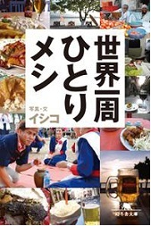
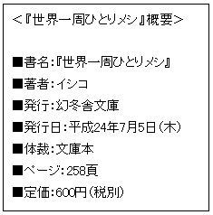
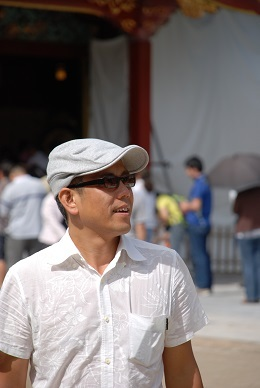

| ゆるばな ～１分でゆるゆるになるイシコの話～ | |
| イシコ | |
| kabushikigaisyahosupitaritibanku (2013) | |
ゆるばな
～１分でゆるゆるになるイシコの話～
byイシコ
女性誌の編集長をしていた頃、編集部の女の子に
「こんなの当たり前だろうが！」
と怒ったことがある。今でも当時の彼女たちと飲んだ際、その時の話になることがあるんだけど、どうして、その時、僕が怒ったのかわからない。まぁ、雑誌は全く売れなかったし、売れないから広告は入らないし、表紙を飾る予定だったミュージシャンは妊娠でドタキャンするし、「私、文章を書くことが嫌いなんです」って編集者の女の子は泣き始めるし...と怒る理由を挙げれば1ダース分くらいはあがってくるんだけどね。
ともかく僕は怒っていたらしい。で、その時、僕の「当たり前だろうが」に対し、編集部の女の子は言った。「当たり前って何ですか？」と。そう聞かれて、僕は答えられなくなってしまった。「当たり前って言ったら、当たり前なんだよ！」と昭和の頑固おやじのように灰皿の一つでも投げて、つき通せばよかったのに、僕は腕組みをして考え込み、「当たり前って何だろう？」と逆聞きしてしまったのだ。編集部は笑い声に包まれ、雰囲気は「ゆるゆる」になり、編集長の威厳は、いとも簡単に吹き飛んでしまった。
思えば、あれがきっかけだったのかもしれない。元々、僕は「ゆるゆる」な性格だった。それが世間の波に揉まれているうちに、いろいろな鎧をつけて、「きつきつ」になっていたんだろうなぁ。その後、雑誌から離れた僕は、「ゆるゆる」をコンセプトにしたプロジェクトを立ち上げ、５年間活動した後、旅に出た。これは、その時期に、verita というWEBマガジンで連載していたものを大幅に書き替え、まとめたものです。
広辞苑によれば、「ゆるゆる」とは「いそがないさま」、「くつろいださま」、「ゆるくなるさま」などと書かれている。「ゆるゆる」と最初から最後まで読んでもいいし、どこか気になるところだけ読んでもいい。あなたの「ゆるゆる」の部分を少しでも引き出してくれるきっかけになれば幸いです。
扇子を手紙代わりに使う「小手紙扇子」の暑中見舞いが届いた。扇子に手紙を書くなんて粋だなぁと思ったら、この文化は平安時代からあったらしい。特に恋文いわゆるラブレターは扇子に書いて、他人に読まれないように畳んで人に託していた。
「好きです」と携帯メールで送ったが、出会い系サイトのメールと間違えられ削除されてしまった若者の話を聞いた後だけに、扇子を選んで心を込めて恋文を綴り、折り畳む手紙が心に沁みた。
小手紙扇子とまでいかなくとも、年賀状や葉書のように手書きの文字をいただくのは嬉しいものである。と言いつつ、僕は年賀状を書かなくなって５年以上経つ。正月の煩わしさはなくなったが、正月に大量の年賀状を眺める楽しみも少なくなった。
正月早々、義務感の中で文字を綴ることが嫌になっただけで、葉書を書くこと自体は嫌いではなく、逆に好きである。今でもいただく年賀状や暑中見舞いなどは、一年かけて返事を出すことにしているんだよね。
旅先で時間が空いた時に、現地の雑貨屋で、日焼けしてしまったようなポストカードを購入し、近くのカフェでビールでも飲みながら、ペンを走らせる。
「●×さんに似た現地の人を見かけ筆をとりました。豚の丸焼き「バビグリン」オススメですよ。バリ島にて」
時候の挨拶もなく、その時の自分の状況を文章に記し、ヘタなイラストを添える。時には自分宛に書いたことがあったなぁ。
書いた葉書はホテルに戻ってフロントに投函をお願いすることもあるが、時間が許せば、地元の郵便局まで出しに行く。日本の郵便局と違って、葉書を出すだけの行為に、かなり待たされることもあるけど、待ち時間に、現地の人を眺めているのも好きだ。生活の中の郵便を感じることができる。それだけ時間をかけて送ったにも関わらず、届かなかったなんてこともあるんだけど。
電話やメールなど、あっという間に気持ちを伝えられる世の中だからこそ、葉書や手紙を書く時間や、葉書を出すまでの時間は大切にしたい。
１年のうち３分の１くらいはサンダルを履いている。５月くらいから１０月まで半年くらいサンダルを履いていた年もある。もちろん夏はほとんどサンダルだし、暑い国に行く時もサンダルを必ず持って行く。何といっても楽。
皮素材のサンダルは難しいけど、それ以外のサンダルなら雨でも気にしないで歩けちゃう。旅先でスコールなどの激しい雨に振られ、靴の中まで濡れてしまうと、後が大変。ホテルの部屋に戻ってから、新聞紙を突っ込んだりして、翌朝、ドライヤーをかけたりして...。それがサンダルであれば、全くもって問題ない。しかも靴下の洗濯の心配をもしなくてもいいことも嬉しい。旅先の洗濯物って意外に面倒だから。
山を登る時や、草むらの中を歩かなくてはいけないような時は靴を履いて行くけど、川べりに立ち寄る可能性があれば、サンダルも持って行く。途中で履き替え、ズボンをめくって、そのまま水の中に入っていくこともある。大きな岩の上でサンダルを干しがてら、素足で岩の上にペタペタと足跡をつけるのが好きなんだよなぁ。
いわゆるビーサンと呼ばれるビニール素材のビーチサンダルも履くけど、普段は雪駄と呼ばれる畳素材もしくは畳に近い素材を使った草履を履くことが多い。畳のような柄の草履って、海外で珍しがられるので、土産にもいいんだよね。外国人もサンダルは履いているのを見かけることはあるけど、たいていはビーチサンダルか、皮のサンダルだったりする。
国内外問わず、寺へ畳素材の草履で遊びに行って、板の間やタイルの上に素足で上がった時のひんやり感覚を味わうのも好きである。その後、柱にもたれて昼寝までご馳走になる。ドレスコードに引っかからない程度にジャケットを着て、草履でパーティーに出掛けて行くこともある。まぁ、高級ホテルのバーで僕が草履ということで入店拒否され、一緒にいた友人たちからブーイングの嵐にあってしまったこともあるけどね。
ある編集者から旅に出掛ける際、いつも持っていく小物について聞かれた。パソコン、本、デジタルオーディオプレイヤー、香...と言ったところで、「香ってお香のこと？」と聞き返され、彼女の声のトーンが少しあがった。そうか。普通は香を持っていかないんだよね。
僕は、たいてい旅に香を持って行く。部屋に入り、灰皿を見つけたら、トランクを開け、香袋を取り出し、香に火を灯してから、荷物の整理を始める。
その様を一緒に旅に来ていた友人が見て言ったことがある。
「なんで、そんなすぐ炊くの？この部屋、別に臭くないじゃん」
一瞬、答えに困った。臭いを消すために炊いているわけじゃないんだよなぁ。じゃ、「なんで？」と聞かれると答えられない。
自分の好きな香りをかぎたいのかなぁと答えてみたのだが、
「好きな香りは何なの？」
と聞かれたら、これまた答えられない。スパイス系のジンジャーだろうが、エキゾチック系のサンダルウッドだろうが何でもいい。友人から土産で香をもらうことがあるんだけど、匂いも確認しないで、そのまま香袋に入れて、すぐ使ってしまう。
しかも自宅で毎日、必ず香を炊くというわけでもない。旅先だけの習慣なんだろうなぁ。思えば、２０代半ばから僕は旅が一気に多くなった。当然、ホテルで過ごす時間も多い。
犬が縄張りにおしっこをするように、煙を炊くことで、たとえ一泊でも今日、この空間で僕の時間が流れますよという儀式のようなものなのかもしれない。
もちろん、部屋でゆったりくつろぐ時、意識的にお香を炊くこともある。味もそっけもない狭いビジネスホテルでも、窓の外が隣の建物で景色が見えなくても、酒をちびちび飲みながら、部屋に煙を炊いて、眺めているだけで豊かな気持ちになれる。煙って、ちょっとした空気の流れで変化するから面白いんだよね。
また、そろそろ香がなくなる頃なんだけど、誰か土産でくれないかなぁ。
映画を最初から観ないと気がすまないという人がいる。実は僕がそう。まだ、それなら理解できるかもしれないが、僕の場合、美術館でもそうなんだよ。というか、そうだった。最初から一枚ずつ観ていかないと気が済まなかったのである。
Ａ型特有の潔癖症だと誰かが言ったが、僕の場合、貧乏性のような気もする。「チケットの元をとらなくちゃ」って。だったら、それを貫き通せばいいんだけど、そこに飽き性のふたご座の側面が出てくる。たいてい途中で嫌になってしまい、最後の方は観ないまま、出てしまう。
それが変わったのは２０代後半に立ち寄ったロンドンのナショナルギャラリー。二千点以上の所蔵品があり、全部、観ようなどというのは無理な話。
よって、やむを得ず、ざーっと観て行き、気になるところで、足を止めて、じっくり観るしかない。ゴッホの「ひまわり」のように、誰もが知っている絵に目が留まる（人もたかっているからだけど）のは当然だが、それ以外に自分の好きな絵というものに自然に出会うことがあることを知った。
その時、前足を上げている跳ね馬を描いている絵の前で足が止まり、見とれてしまった。絵は鮮明に憶えているんだけど画家の名前も覚えていない。今、検索してみたら、ジョージスタップスの「ホイッスルジャケット」だった。この絵の前で、どれほどの時間を過ごしたのだろう。自分の気に入った絵との間に流れる時間の心地よさと言ったらなかった。
それ以来、美術館の巡り方が変わった。気に入った絵や彫刻に出会うまで、絵のタイトルも見ないで、ゆっくり歩いていく。そのまま通り過ぎて出ちゃったってなんてこともある。それはそれでしょうがない。映画や芝居だって入ってから自分の好みに合わないことを知ることもあるんだから。
ただ、気に入った絵があったら、その絵を穴があくほど、じっと眺めている。それは評論家がなんて言おうと関係ない。もちろん評論家の意見は参考になるけど、それに縛られて見るのは旅先でガイドブックに縛られて行動するのと一緒。評論家の意見を読むのなら美術館に行った後にする。「えっ？そんな面白い絵だったのか」って、もう一度、観に行くこともあるんだけどね。
「気」の話をすると、胡散臭いという人もいる。それはそれでいいと思う。僕も無理強いするつもりはない。まぁ、それを「気」にせず、今回も書きつづっていきます。
「気」持ちいいと「気」になる。この二つの「気」を僕は大事にしている。旅先のように感覚が、いつもより研ぎ覚まされているところでは特に。
まず、「気」持ちがいいところには、いい空「気」が流れているだろうし、「気」分もよくなる。例えば沖縄に行くと、知念城の近くにある知念大川という場所に必ず立ち寄る。稲作発祥の伝説の地なんだけど、観光地として知名度があるわけでもなく、整備されているわけでもない。ガジュマルの木があるくらいで、たいした場所でもないんだけど、5年ほど前、たまたま迷って入り混んでしまったら、あまりに気持ちよくて、それ以来、毎年のように訪れている。
「キジムナー」という「木の精」がいるからだよ、「気のせい」かもしれないけどね」
沖縄在住の知人がダジャレ混じりに言ったことがあったなぁ。
旅先で「気」になる料理店や雑貨屋、舞台に映画館にも立ち寄るようにしている。特に海外で知らない店に入るのは勇気がいるけど、一期一会なんだから、嫌だったら出ればいいだけじゃないかと自分に言い聞かせ、扉を開ける。
ちょっとした勇気のおかげで、マレーシアで１週間、通う程、気に入った料理店に出会ったり、アフリカで見かけたモダンダンスのポスターが気になって入ってみたら、人生の中で３本の指に入る程、感動した舞台に巡り合えた。
同じ、「気」になるでも、「気」味が悪い方は立ち入らないこと。そう思ったところは危険な場所だってことも多い。不思議なもので、人間って直感のような物が働くことがあるんだよね。きっと「気」というのは５感に通じる、６つ目の感覚なんだと思う。それにしても「気」を使う日本語って、いっぱいあるなぁ。
５、６年程前、自動車のキャブレターを作っているフランスの会社が開発した自転車に乗っていた。正確には、バイクにもなるから自転車バイク。
面白い代物だった。普段は自転車で乗っていて、ちょっと急いでいたりしたら、自転車で漕いでいた勢いを使って、エンジンをかける。そうするとバイクになる。バイクといっても４０キロくらいまでしか出ないんだけどね。逆にバイクで走っていて自転車に変えちゃうこともある。
一度、表参道でバイクに乗っていて、一方通行を逆走で入っていくと同時にエンジンを切って自転車に変えてしまったことがある。その様子を、たまたま見ていた白バイに乗った警察官に追いかけられて捕まった。でも自転車だから問題ない。
「あれ？自転車？さっきバイクだったでしょ？」
彼は不思議そうに見ていたが、違反切符は切られなかった。さすがに不満気ではあったけど。
自転車とバイクの二つの目線を楽しめる道具だった。それが楽しくて散歩のように目的もなく、よくふらりと出掛けたものである。
これがきっかけで、普段、使っている駅までの同じ道のりでも、違った楽しみ方を覚えた。「散歩」とは違った「散走」目線とでも言うのかな。それは徒歩とジョギング、自転車とそれぞれ違うんだよね。
普段、見落としがちな物を散歩で見つけるなんてことが言われるけど、散歩で見つけられなかったことが、散走のように、ほんの少しスピードが速くなるだけで見つかるなんてこともある。僕なんかは八百屋のみかんとかリンゴの色や値段は、散歩より散走の方が目に飛びこんでくる。その情報が重要かどうかは別として、目に入ってくる情報は速度によって違うのかもしれない。しかも散走には、散歩と違った風を感じることができる。これも脳に様々な影響があるんだろうなぁ。
自転車バイクは残念ながら、他人に譲ってしまったが、彼（フランス語で自転車は男性名詞だからね）が教えてくれた目線が違う楽しさは、今も健在である。
「最近、ビールを飲まない若者が多くなったのよね」
僕がビールを飲む量が多くなったと言ったら、友人から返ってきたのがこの答えだった。つまり僕は若くないってことを言いたかったんだって。
まぁ、時代の嗜好の変化なんだろうね。確かに僕の周囲でも一杯目からチュウハイを頼む若者が増えた気がするもんなぁ。
僕は新しい土地に行くと、必ずその土地で作られたビールを飲む。酒が禁止されているイスラム教の国もあるが、たいていは、その土地のビールもしくはビール文化を持っている。
水よりビールの方が安いチェコのような国もあれば、ビールがアルコールとみなされないロシアのような国など、ビールが飲み物としての位置も様々である。
イギリスのようにぬるいビールを、時間をかけて飲む国もあれば、中南米のように凍る寸前までキンキンに冷やして飲む国もあるし、東南アジアのように氷を入れて飲む国など、飲み方だっていろいろある。
ベルギーの修道院に、自然発酵で作られたビールもあれば、「きつきつ」のイメージがある軍事国家のミャンマーに、モンドセレクションで金賞を取っている美味しいビールがあるなど、予想外の場所でビールに出会うこともある。
ホップの苦味が僕の脳の海馬を刺激するのか、ビールを飲んだ時の記憶は妙に刻まれているんだよなぁ。
スペインで闘牛を見ながら牛の人生と自分の人生を重ね合わせて飲んだマオウ、タイでＨＩＶ感染孤児の子供たちと遊びながら飲んだチャンビア、カンボジアで元収容所を見学してショックを受け、ホテルに引き籠って惰性で飲み続けたアンコールビール、メキシコシティでプロレスに行き、大好きだった日本人女子レスラーの活躍を喜びながら飲んだテカテなど、味はほとんど憶えていないけど、日本で、その国のビールを見かけると、ふと、その時のことを思い出す。ワインでも土地の酒でもいいんだろうけど、世界共通の飲み物だからこそ、その土地の背景が一緒にくっついてくるような気がする。
「単にビールを飲む量が多いだけでしょ？」
って周囲は言うけどね。
若い頃、アロハシャツを着たことがなかった。着ようと思ったこともなかった。映画などで、すぐにやっつけられてしまい、「覚えていろよ！」という捨て台詞が似合いそうな弱いチンピラが着ている服ってイメージがずっと頭にこびりついていた。
１０年ほど前、沖縄に長期滞在していた時のこと。那覇市の繁華街、国際通りを歩いていてショーウィンドウに目が留まった。オレンジの生地にハイビスカスの柄がプリントされた素材のよそうなアロハシャツが飾られていた。一目で気に入ってしまい、今までのアロハシャツのイメージが吹っ飛んでしまった。そして、その夏は、そのアロハシャツばかり着ていた。
それ以来、そのアロハシャツのブランドと１０年近くつきあっている。毎年、コレクションが出る度に注文するようになった。今年はオレンジの生地にシーサー柄のアロハシャツと、白い生地に白のハイビスカスが描かれたアロハシャツを注文した。
アロハシャツって、ハワイに移り住んだ日本人移民が、着物をリメイクして作った和柄のシャツが発祥だという説がある。きっとどこかに懐かしさを覚えるのはそのせいかもしれないなぁ。
「よく言うよ。10年前まで、チンピラのイメージって言ってたじゃないか」
と、昔からアロハシャツを着ている友人に怒られたけど、途中で好みが変わることってあるんだよ。子供の頃、臭くて嫌いだったけど、今は大好物の納豆のように。
さて、ハワイではアロハシャツは正装で、沖縄では仕事先にアロハシャツを着て向かう。沖縄の場合、アロハシャツとは呼ばず、かりゆしウェアと呼ぶ。「かりゆし」って「めでたい」とか「自然との調和」という、いかにも沖縄らしい言葉である。
朝の出勤時間に那覇市内を走るモノレールに乗ると、様々なかりゆしウェアを着た人達がいて、端の駅から端の駅まで一往復もするとかなりのアロハシャツ図鑑が楽しめる。
「ナイチ（本土）の人かね？楽しんで行ってね」
先日、車内で仕立てのよさそうなレーヨンのかりゆしウェアを着ていた老人から声をかけられた。沖縄に長居し、すっかりかりゆしウェアを着ているつもりでいたんだけど、まだまだ身体に馴染んでいないんだろうね。つまりは「自然との調和」が、まだできてないってことなのかな。
夏になると海を眺める時間が欲しくなる...とここで文章が終わっていた。ジメジメした梅雨で気持ちも身体も重くなり、キーボードを叩いている途中で、うとうとしてしまい、そのまま大の字になり朝まで眠ってしまった。
「気象庁より梅雨明け宣言が出されました」
寝ぼけ眼でテレビをつけると、女子アナウンサーの嬉しそうな声が聞こえた。
海でも行ってみるか。そう思い、寝汗をたっぷりかいた身体をシャワーで洗い流し、お札数枚をマネークリップに挟み、携帯電話と文庫本と一緒にポケットに入れ、草履で外に出た。
それから２時間かけて、電車とバスを乗り継ぎ、読書と車窓を楽しみながら、葉山町の一色海岸の海の家に向かった。
毎年、地元で間伐した竹を使って建てられ、電力はソーラーパネルや風力発電でまかない、排水も通称EM菌と呼ばれる生物分解など環境に優しい僕の大好きな海の家は今年も健在である。
この日、海の家の前では環境イベントが行われていた。ビーチクリーンすなわち浜辺のゴミ拾いをするらしいので僕も参加してみた。一色海岸の浜辺はきれいだとばかり思っていたが、砂の中からは煙草のフィルターが、かなり出てくる。これらが海に流れ、漂流してしまうと魚が食べて、死んでしまうんだよとスタッフの男性の話を聞いていた子供たちは、必死に煙草のフィルターを探して拾っていた。こういう教育っていいよね。
午後は、ビールを飲みながら海を眺め、砂浜で昼寝を貪り、贅沢な時間を堪能する。陽が沈む頃には身体から６月の湿気が抜けていき、太陽の力が身体の中に染み込んでいた。
家に戻ると、ゆっくり風呂に浸かり、飲みかけの白ワインのボトルを冷蔵庫から取り出し、グラスに注いで飲みながら、ここまで書いた。そして、あえて、ここで書くのを止めてから眠った。
昨晩より眠りが深かった。こんな短い原稿を３日かかりで書くことになってしまったが、おかげで夏本番に向け、僕なりに体調を整えることができました。
田舎で育ったせいか、街というものに対して子供の頃から憧れがあった。大人になり、街に住むようになった時、嬉しかったもんなぁ。不思議と今はまた、田舎に憧れているんだけど。それはともかく、旅が多くなり、様々な街を歩くうちに、好みの街というものも出てきた。
先日、滞在したプラハも好みの街だった。チョコの首都で、作家カフカが生まれ育った場所で、人形アニメーションが盛んな街である。
まず路面電車のある街並みがいい。レトロなイメージがあるだろうが、現代、二酸化炭素の排出が車より少なく、建築費用が他の工事より安く済み、地球にやさしいと再び注目を集めている乗り物なんだよね。
ウラジオストック、ローマ、長崎市と路面電車のある街が僕は好きらしい。ウラジオストックでは軍港に面した道を電車が走り、ローマでは２０００年近く前にタイムスリップしたような遺跡の脇を電車が走り、長崎市では洋館や教会など懐かしい異国情緒の中を電車が走る。そして、プラハでは、プラハ城や国民劇場など絵画のような世界の中を路面電車が走っていた。
そして、統一された歴史のある建築物が広がっている。地震の少ない欧州にはよくある光景なんだけど、プラハもまさにそうで、赤い瓦の屋根が街全体を覆っている。百年単位で熟成されてきた色は、様々な歴史を包み込むような優しさを感じるんだよなぁ。
街の中に安全な公園があることもいい。ケーブルカーで上り下りするペトシーン公園がお気に入りで何度も通った。公園で葉書を書き、本を読み、ノートパソコンを持っていき、書き仕事をしたこともある。挙げ句には昼寝まで貪るという始末。海外の公園で無防備に昼寝ができるというのは、ありそうで、なかなかない。まぁ、海外の公園の昼寝は、人にはあまり勧めないけどね。
そして何より美味しいビールが飲める街なんだよなぁ。一人当たりのビール消費量世界一を誇るチェコは、街の至るところで、「ナストラビー」という乾杯のかけ声が聞こえる。日本語で、「健康であれ～！」的な意味である。これだけ陽気に飲めれば、健康にもいいだろうなぁ。まぁ、美味しすぎて、ついつい飲み過ぎるんだけど。
カーレースと聞くと何を思うだろう。僕は１秒を争う過酷なレースを思い浮かべる。しかし、これに「クラシック」という言葉をつけると急に柔らかくなる。クラシックカーレース。昔、観た映画「チキチキバンバン」のようなファンタジー・ミュージカルを思い出すからかなぁ。車が空を飛び、波の上を走るこちらまで楽しくなってくるゆるい娯楽映画だった。
空は飛ばないけど、少年のような心を持った大人達が集ったクラシックカーレースがある。イタリアで行われていたミッレミリアの日本版「ラフェスタ・ミッレミリア」。今から８０年前の車から、最新の物でも４０年近く前の車が勢揃いする。それぞれが大切に保存し、丁寧にメンテナンスを施した車に乗り込み、４日間、東北や北関東１０００マイル（約１６００キロ）を駆け抜ける。１６００キロというとちょうど青森から福岡は博多までの距離。今の車だったら、なんてことはないこの距離も、古い車で走り抜くのはかなり難しい。現に出場する車の３分の１程度は途中でリタイアするらしい。毎朝、車の一つ一つの部品を愛でながらチェックし、車のご機嫌をとりながら走り続ける。
先日、そのミッレミリアに参加してきた。僕が乗ったのは６７年にイタリアで産まれた「チンクエチェント」。「ルパン３世」が乗っていた小さな可愛いらしい車だ。狭い車内にドライバーと地図を持つナビゲーターと大柄な男２人が乗る姿は何ともミスマッチだが、その光景を周囲で見ている人々は優しい笑顔になり、こちらもつられて笑顔になる。
時間を競うことには変わりないが、早さを競うのではなく、いかにその間の距離を正確な時間で走るかということが勝負のポイントになる。よって風景を楽しみ、雲の形で何に見えるかをドライバーと語り合い、沿道の声援に応え、時には停まって話し込むなど、レースなのに車の旅を楽しむ余裕がある。
とはいえ、６回の故障を乗り越えて走り抜けた４日間は走っている方は、それなりに体力も精神もかなり過酷だったんですけどね。とにもかくにも、おかげさまで、なんとか無事、１０００マイル完走いたしました。
抜いたコルクの匂いを楽しむ。グラスを少し傾け、色を楽しむ。グラスを回して香りを楽しむ。口に含んで舌の感触を楽しむ。鼻に抜ける香りと後味を楽しむ。１杯の飲み物でここまで楽しめるワインにはいつも感心させられる。
ここ１ヶ月、フランスのドキュメンタリー映画「モンドヴィーノ」のプロモーション企画に携わり、様々なワインを飲ませてもらった。ワインの裏側で起きている様々な人間模様が描かれたこの映画に感銘を受け、ワインの知識を脳に叩き込む...と言いたいところだけど、アルコール漬けの僕の頭には、知識とやらは、ほとんど入っていない。それよりも今回の企画で、一番の収穫は、シチュエーションでワインを選ぶ楽しみを覚えたことだと思う。
小浜島で、友人がその場所にふさわしいと選んできてくれたワインがあった。高級チリワイン「アルタイル」。ギリシア神話に登場する魔法の神酒を注ぐ専任者「アルタイル」をモチーフにしたワインである。小浜島の夜は闇が深い。街のような光害もなく、空は星一面の世界が広がっている。星と神話というシチュエーションにぴったりのワインだった。
あの晩以来、僕は、ワインの味とは別に、その時の話や洋服に合わせたワイン選びを好むようになった。ケニア在住の獣医の友人が来日した際は、南アフリカのワインを飲みながら、キリンの大移動の話を聞いた。ベトナムシルクのシャツを着て友人の家に遊びに行った時は、ワインが好きな人なら、まず選ばないであろうベトナムのダラットワインとライムを買っていった。ちなみにダラットワインは好みでライムを入れる。
そして先日、岐阜の実家へ焚き火をする為に帰った。キリシアのクレタ島にあるオリーブ畑の脇で焚き火をする夢を見て、居ても立ってもいられなくなったのだ。ワインショップでクレタ島のワインを選び、ギリシアの夢を思い出しながら焚き火を楽しんだ。自己満足の世界なんだけど、ワイン選びは料理と合わせるだけではなく、こういった楽しみ方もあってもいいと思うんだよね。
昨年、スキーを始めた...というより、再開したと言った方がいいのかな。大学時代は、それなりに（あくまでそれなりに）スキーに行っていた。映画「私をスキーに連れてって」が流行った頃で、どこのスキー場に行っても混んでいた。それでも、リフトに乗って、ゲレンデに流れる松任谷由実の曲を聞きながら、「トレンド（この言葉も懐かしいなぁ）」を意識し、悦に入っていたんだよね。
しかし、いつしかスキー場に行かなくなった。理由は２つある。一つは僕の持っていたウェアの機能性がひどかった。下に何枚も着ないと寒い。そして、少し滑ると中に熱がこもってしまい今度は汗をかき、それが冷えて寒い。違った種類の寒さが続けてやってくることに耐えられなかった。二つ目はスキーに行く友人たちが全員、体育会系だったせいか、１日リフト券を購入するとコーヒータイムもなく、リフトの終了時間まで延々と滑る。小さな頃から、ぐうたら人間だった僕はついていけなかった。こうして、いつしかスキーから遠のいていった。
一昨年、ひょんなことからスウェーデンのスキーウェアブランドのアートディレクションをすることになり、スゥエーデンのスキー場に籠っていた。１５年以上もスキーから遠ざかっていた人間に言われたくないだろうが、スキーウェアがここまで機能性が良くなっていることに驚いた。中に着込まなくても寒くない。しかも通気性が良く、水蒸気は逃すが熱は保ったまま。汗をかいても蒸発していく。さすがイギリス王室御用達だったというのもうなずける。その上、ピンクやターコイズなどスウェーデンらしい発色もいい。
これをきっかけに再びスキーに出掛けるようになった。学生の頃とは違い、誰と行っても自分のペースで楽しむというあつかましさを持つようになったことも大きい。３時間程度滑って、一日中、滑っている友人たちをスキー場に置いて、一足先に温泉に向かい、その後、貸し切りコテージで本を読みながらゴロゴロしていることもあれば、ノートパソコンを開いて書き仕事をすることもある。夕方になると友人たちはコテージに戻ってくる。その後は、夕暮れの雪景色を眺め、ビールを飲んで語らうこともあれば、ワイン片手に料理を楽しむこともある。誰に気兼ねすることもなく、様々な時間を過ごしながらのスキーの旅は、今の僕のお気に入りの冬の旅の一つである。
「ほ～ら。目を開けてごらん」
「わ～！きれ～！素敵～！」
２０代の頃、「夜景」と聞くと何度も想像したカップルの会話である。悲しいかな、結局、一度も、そんな経験をしたことはない。神様も一度くらい叶えてくれたっていいじゃないかと思っていたけど、今では、そんな邪な考えも面倒になってしまった。
夜景も様々であり、展望室のように入場料を払って楽しむ夜景もあれば、小高い山の上など自然の中で楽しむ夜景もある。ホテルの部屋から見る夜景もあれば、バーやレストランから食事や飲み物を楽しみながら見る夜景もある。どれも、それぞれの楽しさがある。
東京タワーや最近、復活したニューヨークのロックフェラーセンタービルの展望室のように入場料を払って見る夜景は、テーマパークに行ったかのように、ダイナミックさを楽しむ。
小高い山や川縁の対面などから見る夜景は、自然の音に身体をなじませながら夜景の中に包まれていく感覚を味わう。
ホテルの部屋から見る夜景は、ソファを夜景が見える方向に向け、部屋に備え付けられたミニバーからウィスキーの小瓶を取り出しグラスに注ぎ、ただひたすら眺める。
バーで楽しむ夜景は景色をつまみに会話を楽しむこともあるけど、一人の場合は考えごとをするために入る。新しいことをやろうと決意するとき、僕は夜景を眺めている時が多いんだよなぁ。
今週、札幌に滞在していたんだけど、JR札幌駅の上にできた展望室からの夜景もよかった。キャッシュオンのバーがあり、夜景に向かって贅沢な間隔で並べられた椅子に座って飲んでいるとホテルの部屋にいる感覚に近い。しかもトイレまでガラス張りというおまけつき。冬で空気が澄んでいたこともあり、星を散りばめたような景色が広がっていた。
夜景というものは、心を和ませ、子供心を掻きたてるものでもあるんだけど、時折、「この景色を人間が創ったんだなぁ」と思うと恐ろしくなることもあるんだよね。
富士山が世界遺産に登録されるとか、されないとか（２０１３年６月に登録決定）騒がしい。世界遺産というものを求めて旅をしたことはないけど、興味がないわけではなく、近くに世界遺産があるよと言われたら、「じゃ、行ってみようか」となる。
タイのチェンマイから、約１時間のフライトで世界遺産の街があるというので行ってみた。ラオスの「プラパバーン」である。
到着した日は、なぜ、ここが世界遺産なのだろうと首をひねった。確かにメコン川もワット（寺院）も美しいことはわかる。しかし、他の国でも探せばありそうな景色である。正直、あまりいい印象は持たなかった。
「世界遺産」と名前がついたことで、観光地化されつつある光景が鼻についたんだろうなぁ。街のメインストリートには、インターネットカフェがやたら目立ち、サンダル姿の欧米人であふれ、レストランのメニューの値段のところには、何回も値上げして書き直した跡が見られる。
究極は早朝の僧侶達への托鉢の光景。その托鉢に参加しようと、中国人やドイツ人を乗せた観光バスが、どっと押し寄せ、現地の人達の横に並んで一緒に托鉢する。本来、僧侶に敬意を払って、現地の人のように座って托鉢するのではなく、立ったまま、おしゃべりしながら托鉢する光景は厳かな雰囲気を壊していた。鉢に食べ物が入りきらなくなり、途中で寺に引き返してしまう僧侶が続出し、僧侶が記念撮影の場面に駆り出されたキャラクターのように見えた。
いや、待てよ。マイナスのことばかり並べているけど、考えてみたら僕も「世界遺産」を目当てに来た観光客の一人なのだから偉そうなことは言えない。
そう思ったら、いつもの旅の時間に戻った気がするんだよね。駄菓子屋でおこしを買って食べ、土で創られたポストに絵葉書を投函し、メコン川を舟で渡って散歩し、出会った子供たちと遊びながら、見晴らしのいい場所へ連れて行ってもらう。二日目、三日目と、ここで生活する人の空気や匂いが身体にしみ込み始めると、どんどん心地よくなってきた。
最終日、渡し舟を待っている間、川べりに住む歯が、ほとんど抜けてしまった老人から指紋だらけのコップに注がれたラオスの酒「ラオラオ」をいただいた。言葉も通じないのに、二人でニコニコしながら、夕陽を眺めていたら、とてつもない幸福感に襲われた。「世界遺産」の言葉がなかったら、この時間にも出会えなかったんだよなぁ。
２１世紀を迎えて舞い上がっていた正月開けのこと。普段、スーツなど着ないのに何を思ったかオーダーメードで仕立てたことがある。しかもシンガポールのインド人街。理由などない。ただ、単に創りたくなっただけ。
「素材はこれで、こんな感じで作ってください！」
一緒に来ていた編集者に訳してもらい、その店の机に置いてあったメモに下手なデザイン画を描いて置いてきた。数日後、出来上がってきたものは自分の考えていたスーツと全く違うデザインのスーツが出来上がってきた。「なんでこうなるの？」という気持ち８割、「やるなぁ...。こう来たか」という気持ち２割であった。
トイカメラで撮ったフィルムの現像が仕上がって、受け取った時の気持ちは、それに近かった。トイカメラとは言葉の通り、おもちゃのようなカメラのことでプラスチックのレンズだったり、ファインダーやシャッターがなかったりする。よって現像するまでどんな写真に仕上がるのかは予想し難く、しかも一枚ずつフィルムを手作業で巻きながら、ゆっくり撮るという、デジタル化に逆行するカメラなのである。
もちろん、光、距離などを推測し、自分なりに仕上がりをイメージしてシャッターを押す（ピンホールカメラの場合はレンズのふたを開ける）んだけど、写真が出来上がってきたときにつぶやく。
「こんなはずじゃなかった...」
そんな中から少しレトロな感覚の１枚の写真に出会い、またまたつぶやく。
「これ、メチャクチャいいかも...」
そのギャップが好きで、このところ、旅や散歩のときにはたいてい持ち歩いている。
デジカメのすぐ確認できる便利さに慣れてしまった時代だからこそ、トイカメラのゆるい時間は、ホッとさせてくれる。１枚１枚ゆっくり味わい、その味わいが現像まで続く。この時間を大切にしたいんだよね。もちろんその時間を切り取った写真も。
最初に書いたシンガポールで作ったスーツだけど、結局、一度しか着ていない。しかも居酒屋で行われた新年会。友人たちは全員、ジーンズのカジュアル姿だったのに、なぜ、そんな場所に着ていったのか未だにわからない。
打合せ先で、「コーヒーでいいですか？」と聞かれることはあっても、「紅茶でいいですか？」と聞かれることってない。僕は、コーヒーが好きなので問題ないけど、最近、コーヒーを飲めない人が意外に多いことを知った。一方、紅茶が飲めない人は...少なくとも僕の周囲にはいない。
最近、紅茶を飲む機会が増えた。人気漫画のモデルにもなったティーブレンダーに出会ったからというのもあるのだろう。彼から聞く紅茶の話は、ソムリエから聞くワインの話に似ていた。紅茶は、その土地の気候と土によって葉の味が変わる。ブレンダーの混ぜ方によって茶葉は更に美味しく変身していく。
ただ、たとえ、いい茶葉に仕上がっても淹れ方を間違えると美味しくない。淹れ方と言っても、必ず８０度以上の温度で入れるといった僕のように無頓着な人間でも、ほんの少し注意すればいいだけのこと。ちなみに湯の温度が低いと茶葉が中途半端にしか開かないのでうまみは出ないそうだ。
お客さんに出す場合、面倒くさがって、湯を注いだカップとカップの間を、一つのティーパックを移動させて色をつけて出し、少しでも茶葉に湯が触れるようにと、器の中で、ティーパックを揺らしていた。これは最もやってはいけない行為のひとつらしい。雑味のムラが出て、味が変わってしまうのだそうだ。二人分の紅茶を一つのティーパックで飲むことは問題ないが、大きめのポットで入れてから分けるよう注意を受けた。ポットに湯を注いで器を温め、一旦、湯を捨てて、ティーパックもしくは茶葉を入れ、カップラーメンのようにお湯を注いで、じっと待つ。
茶葉は１ヶ月程度で使い切ってしまった方がよく、冷蔵庫での保管もよくないことを知り、できるかぎり真空パックの茶葉をこまめに購入するようになった。
静かな気持ちで紅茶を淹れる時間は、日本茶にも通じ、穏やかな時間が流れる。イギリスの文化として知られるアフタヌーンティーも、元々は、ヨーロッパの貿易商が日本で茶の文化に出会い、持ち帰って発展させていったものだしね。
「紅茶でいいですか？」
今度から、うちへ遊びに来た人にはそう言ってみたいと思う。
「何言ってるの？イシコん家だったら、ビールだろ？」
って言われそうだけど。
１分でもゆっくり眠っていたいという方に、朝の擬音を表現してもらったら、
「バタバタ！」、「ドタドタ！」、「イライラ！」、「キツキツ！」と、あまり、いい擬音は聞こえてこなかった。
僕は、昔から、「ジジイ」とあだ名がつくほど早寝早起きだったせいか、朝の時間が好きである。よって、僕の朝のイメージは、「ゆるゆる」。その分、夜は起きていられず、意識を失くすように早く眠るんだけどね。
そんなに朝早く起きて何をしているのか。ヒーリング系の音楽をかけながら、ヨガのまねごと（僕は身体が固いのでどうしても、まねごとのように見え、ヨガとは言い切れない）をして、近くの大好きな公園を散歩する。ゆっくり朝風呂に入ることもあれば、コーヒーや紅茶をすすりながら本を読むこともあるし、窓を開けて、朝の空をただ眺めているだけのこともある。
これは、どこの国に居ても楽しめることばかりである。もちろんモンゴルのようにゲルに泊まった次の日は、朝風呂ってわけにはいかないけど、ヨガや散歩などは、たいていどこの国、どこの場所でも楽しむことができる。
プーケットやバリ、ハワイなどのように海辺のコテージでは、朝日を感じ、波の音を聞きながらヨガを味わい、ストックホルムやロンドンの冬のように、ぴ～んと張りつめた空気を感じらながら散歩を楽しむ。
街中の朝も楽しい。ホーチミンやヤンゴンのように自転車の波を撮影し、ニューヨークではコーヒーメーカーの音が響く静かな部屋で、窓を開けた瞬間、都会の喧噪が入り込む空気感の変化を味わう。
今、八ヶ岳南麓に滞在している。さっきまで、カッコウの声をつまみに、コーヒー代わりにスコッチをちびちび楽しんでいたところだ。朝から酒かよ...って怒られそうだけど、朝から酒を飲んだらダメなんて誰が言ったのかねぇ。二日酔いで迎える朝より、よっぽどいいと思うけどなぁ。
海外旅行に携帯電話を持っていくことは既に当たり前になっているらしい。どこでも連絡がとれる便利さと安心感があるのは嬉しいけど、なければないで、なんとかなるし、余程のことがなければ困らないんだけどなぁ。
１０年ほど前、僕が雑誌を創っていた頃、海外ロケに行く際、現地の人と連絡を取ることも多かったけど、携帯電話代が高価だったこともあり、一度も使わなかった。どうしても急に連絡を取らなければならない場合、ホテルの電話か公衆電話を使っていた。でも、連絡が取れなくて困った経験はない。
今では、海外での携帯電話の使用料も手頃になったけど、それでも僕は公衆電話を利用することが多い。日本で暮らしていると「公衆電話はかけられて当たり前」という感覚があるけど、海外ではその感覚が通用しないのが面白い。
まず使える電話を探すところから始まる。使えない公衆電話の方が圧倒的に多い場所もある。以前、ニューヨークに長く住んでいる友人とカフェにいて、「ちょっと電話してくるね」と席を立ったとき、「問い面の電話は両方とも使えないから、２ブロック先の電話がいいよ」と言われた。中古車の調子の悪い箇所を知って、乗りこなしているかのような言い方はカッコよかった。
翌日、使う用事もないのに、公衆電話が故障している場所をいくつか確認した。たったそれだけのことで自分が、その街に少し馴染んだような気がしたんだよね。
使える公衆電話を見つけた後も問題は残る。クレジットカードが使える公衆電話は便利だけど現地のコインでしかかけられず、ポケットにコインを持ち合わせていないと紙幣をコインに両替しなくてはならない。日本のようにコンビニが近くにあるということも海外では、なかなかないし、どうやってくずすかを考える。よく考えれば、ほんの２０年前の日本もそうだった。それでも何とかなっていた。こうして公衆電話と格闘する時間が、旅の記憶として刻まれる。
世界中の公衆電話はなくなりつつあり、そのかわり携帯電話が普及した。どこでも連絡がとれるという安心感と便利さを得たけど、いつでもどこでも電話が鳴る煩わしさとゆとりを失ったのかもしれない。
トロント映画祭で、ベートーベンが第九を作曲した晩年期を描いた映画「敬愛なるベートーベン」を観た。
映画のあらすじや内容は憶えていない記憶力の悪い僕でも、映画のワンシーンくらいは残っている。そのワンシーンから周囲のシーンをじわじわと思いだし、再び味わう楽しさが映画にはあるんだよなぁ。
「敬愛なるベートーベン」は、キャンドルのシーンが強烈に記憶に刻まれた。ピアノに向かって格闘する中、何本ものキャンドルの上で踊る炎が、ベートーベンの繊細かつ豪快な心の様を現しているように見える。キャンドルの灯りが、まるで生きているように感じられたんだよなぁ。
ベートーベンの時代、キャンドルは照明として使っていたんだよなぁと改めて知るんだけど、実はツタンカーメンの王墓から燭台が見つかっているくらいで、２３００年前には既にキャンドルって照明として使われていたんだよね。ちなみに日本では奈良時代には既にキャンドルがあったらしい。
友人に言わせれば、現在、キャンドルは宗教儀式くらいでしか使用するイメージがないらしいが、僕は、普段の生活でも、よくキャンドルを利用する。「ろう」で作られたキャンドルも使うし、何度も詰め替えできるリキッドキャンドルも使う。どちらも、浮かび上がるやわらかい灯りに魅了される。
音楽を流し、キャンドルの灯りの雰囲気を味わいながら酒やお茶を楽しむこともあるが、ただキャンドルの炎を眺めることだけに集中することもある。
入浴時、浴室の電気を消し、キャンドルを灯し、ワインを持って浴槽につかり、炎の明かりを観ながら、ゆったり飲むのも好きなんだよなぁ。炎は、ほんの少しの呼吸にも反応して揺れる。穏やかになることもあれば、逆にメラメラと怖く感じることもある。
あまりに気持ちよくなりすぎて放心状態でバスルームを出てしまい、翌朝、溶岩のように溶けていることで、キャンドルの灯りを消し忘れたことを知り、ぞっとするなんてこともあるんだけどね。
旅が多い僕が、今、一番、開発して欲しい旅グッズに旅先用のホテルで楽しむコンパクトな缶に入ったキャンドル。どこかで作ってくれないかなぁ。
マッサージがダメだという人は、お酒が飲めない人よりも人生を損している...と先日、酔っぱらった僕は真っ赤な目で語ったらしい。整体推進派の人にマッサージを否定され、反論し始めたことまでは憶えているのだが、その後の記憶がない。お恥しい限りである。今、考えれば、整体だろうがマッサージだろうが嗜好の問題なので、どっちでもいいのに。
ただ、足裏だろうが、リンパだろうが、オイルだろうが、僕がマッサージ好きなことは間違いない。「手当」という言葉があるくらいだから、手を当ててもらうだけで、人間というのは元気になれるんだと思う。
海外を旅していると、マッサージという呼び方はともかく、様々な場所で人は癒される方法を持っていることを知る。タイではタイ式マッサージ、台湾では足裏マッサージ、ハワイではストーンマッサージ、イギリスではリフレクソロジーなど、食べ物と同じようにマッサージもお国柄でそれぞれ楽しむことができる楽しみがある。
ときにはマッサージがエステにまで延長してしまうこともある。「男がエステなんて気持ち悪い」と言われたことがあるが、これに関しては逆になぜ、女性だけなのだと、たとえ酔っていなくても素面の状態でも反論したい。気持ちいいことに男女の区別などないんだよ。
バリ島で受けた伝統的なクリームバスも、スリランカで受けたアユールベーダも気持ちよかった。顔にヨーグルトを塗られるエステは、さすがに一瞬、戸惑ったけど、それでも、いざ、やってみると日焼けした肌には心地よかった。
現在、八ヶ岳で朝をテーマにしたイベントに関わらせていただいている。森林の中で、癒し効果の高いフィトンチッドをたっぷり浴びながらのオイルマッサージを体験したが、こちらも最高に幸せな時間だった。森林の中の野外マッサージも、今後、イベントとしてあってもいいかもしれないね。
ただ、ここまで書いておいて何だけれど、実は僕はマッサージ好きだけど、凝り症ではないんだよなぁ。施術する方から、「あれ？どこか凝っているところありますか？」と言われてしまったこともある。マッサージを受けているゆるい時間が好きなんだと思う。
冬を迎え、温かい飲み物をすすりながら、絵本を開く時間が恋しくなる。僕の絵本歴は決して長くない。絵本の時間を楽しむようになってから、ちょうど二度目の冬を迎えるところ。
「今日、電車の中で絵本を読んどったら、みんな変な顔で見よるのよ。腹が立ったなぁ」
絵本の読み聞かせを全国で展開している知人が、そう言っていた。確かに大人が絵本を買う姿は見ても、電車などで大人が絵本を広げて楽しむ光景は、あまりというか少なくとも僕は見かけたことがない。
子供の為だと誰が言ったわけでもないのに、絵本は子供の読み物といった偏ったイメージがあるんだよね。絵本の読み聞かせをしている知人は、大人こそ絵本を読む時間を持つとゆるやかな時間が流れ、顔が穏やかになるのにと教えてくれた。
それ以来、時々、絵本を自分の為に購入して開く時間を持つようになった。子供の頃と同じ感性で選ぶ絵本もあれば、興味のある国の絵本を選ぶこともある。先日は、僕が今、行きたい国のインドやアフリカ諸国の作家が描いた絵本を購入した。絵から漂う土地の雰囲気を感じ、物語から、その土地の考え方を知るきっかけになることもある。
もちろん、日本にも五味太郎氏を始め、世界に知られる有名な絵本作家は多い。最近のお気に入りはイラストレーター山崎杉夫氏が描いた「黒猫ナイト」。彼の描く太い線の世界観は、言葉なしで勇気をもらえることがある。自分の好きな絵のテイストを選ぶことは、大人になってからの絵本選びの楽しさでもある。
渋谷で早めの夕食を済ませた帰り、大好きな古本カフェ「フライングブックス」に立ち寄り、店主にオススメの絵本をうかがい、スズキコージ氏の「やまのディスコ」を購入した。手に入れた絵本を持って家に戻り、風呂に入り、ホットウィスキーを片手に絵本を開く。すると自分と絵本との間にゆるやかな時間が流れ始める。夜が長い冬の楽しみが一つ増えたようだ。
久しぶりに列車旅と路線バスの旅を楽しんできた。旅を中心に生活を始めてから１０年以上が経ち、飛行機や新幹線に乗ることが日常の一つになっている。旅が三度の飯より好きなので、ワクワク度は変わらないんだけど、仕事で出掛ける旅が増えた分、時間も限られていて目的地の決まった旅も多くなった。そういった旅はたいてい予測できそうな旅なんだよね。
そうなるとわがままなもので、時には目的のないその日暮らしのぶらり旅というものを味わいたくなる。新幹線や飛行機のぶらり旅もいいんだけど、ぶらり旅のスピードとしては少々、早い。鈍行列車に乗り、窓に流れる風景を見ながら、インスピレーションで降りる場所を決める旅の方がぶらり感は出る。
一週間程、時間が開いたので、文庫本、デジカメ、ウィスキー、ノートパソコン、少しの着替えをリュックに詰め込み、鈍行列車に乗り込んだ。一駅一駅、ゆっくり風景が変わっていくのを感じ、乗り継ぎの駅では缶コーヒーを買ってベンチに座り、反対側のホームの人を眺める。ゆっくり動く旅の時間は、萎縮していた脳が緩んでいくような心地よさを感じることがある。
太陽が出ている間は車窓を味わい、哲学者にでもなった気分で風景を様々な視点で考えてみる。時折、スキットルに詰めたウィスキーを口に含み、アルコールと太陽の温かさが染み渡った身体に電車の振動が加わり、うとうと眠りに堕ちていく。
冬は陽が短い為、車窓に自分の顔が映り始めた頃、今日の宿泊する場所を決める時間のいい目安となる。路線図で見当をつけて携帯電話のネットにつなぎ、ビジネスホテルを予約するのもよし、観光所がありそうな駅でふらりと降り、夕食のオススメ場所を聞くのと同時に宿泊場所を紹介してもらうのもよし、駅近くのカフェに入って、無線LANや端末の通信機にノートパソコンをつなぎ、写真を見ながら、じっくりホテル選びするのもよしとその日の気分で宿泊場所を選ぶ。
ホテルにチェックインし、ゆっくりバスタイムを楽しんだ後、バーに一人で出掛けてみる。グラスを傾けながら一日の旅の風景を思い返す。こんな日々をしばらく続けていると、今度は速い乗り物に乗りたくなるんだよなぁ。本当に、わがままな生き物です。
女性ファッション誌の編集長をしていたことがある。雑誌は笑ってしまう程、売れなかったけど、それがきっかけで文章を書くことが好きになり、デザインに対しても自分の楽しみ方を持つようになった。
デザインの善し悪しというのは、オピニオンリーダーや評論家の発言に影響されてしまうことが多い。もちろん納得する場合も多いけど、結局のところは個人の趣味思考でいいと僕は思っている。自分の目線で、そのデザインが気に入ったら、周囲がなんと言おうと「自分は、このデザインが好き」と恥ずかしがらずに言えばいい。誰に迷惑をかけるわけでもないのだから。
自分の好きなデザインがわかり、自分なりのデザイン目線を持つようになると散歩や旅の楽しみが増える。街で見かけるポスターはもちろんのこと、本屋やＣＤショップの手描きのポップが内容だけじゃなく、文字の配列なども気に留めるようになる。意外に銭湯に貼られている昔の看板なんかも楽しいんだよなぁ。
もちろん海外に出掛けて行っても、空港や地下鉄、道路名に表示されているインフォメーションパネルなどに目が留まり、街や店に貼りだされているポスターやフライヤーの色とタイポグラフィの発想に衝撃を受けることもある。もし、自分がTシャツにプリントするなら、どの交通標識がいいかなんて考えるのも楽しいものである。
先日、キューバに行ってきた。カリスマの独裁者が君臨する独特の成長を遂げた国である。公園の野外の古本市に並んでいる本の装丁を眺め、ラテン感覚を持った社会主義の中から生まれたデザインに衝撃を受けた。
実は最近、デザイナーが主張し過ぎているような、凝ったタイポグラフィやデザインを見ることが続いて、少々、辟易していた。だからこそ、キューバで出会った、ストレートに人の温もりが感じられる素朴なデザインにほっとした。デジタルの音に慣れた耳で、ある日、突然、耳にしたアナログのレコード盤の音にホッとするようにね。
あるプロジェクトで約２週間かけて４台の車で西日本を旅することになった。
「かわいい車で回りたいなぁ！」
自分が乗る車を選ぶ際、わがままを言ってしまった。みんなの困った顔を見て悪かったなぁとは思ったけど、こんな機会はなかなかないのだからと、最終的には、わがままを通させていただいた。
大学時代、人並みに車が好きでアルバイト代をつぎこんでは、様々な中古車を買い、自分なりに部品を交換して乗っていたのだが、卒業後、上京してからは、すっかりその熱も冷めてしまった。今では車に対してこだわりも知識もなく、現在、使用している車も、いただいたステーションワゴンを車というより道具として使っている。
それがここに来て、また車という文化に興味を持ち始めた。数か月前にキューバを訪れた影響も大きいんだと思う。どこか似たようなデザインが多い日本車に慣れてしまったせいもあるんだけど、ハバナ市内で見かけた古いアメ車や、日本では見かけないサイドカーに感動してしまったのだ。
ご存知の通り、キューバはアメリカと喧嘩している社会主義の国である。しかし、６０年代半ばまでは作家ヘミングウェイをはじめとして、キューバ在住のアメリカ人は多かった。それに伴いアメリカの文化も流れ込んでいった。アメ車の文化が残り、アメリカ人だけがいなくなった。５０年代のフォードのサンダーバード、シボレーのベルエア、キャデラックのコンバーチブルなど走っているのを見かけると、昔のハリウッド映画の世界に迷い込んだような楽しい気持ちになる。
きっと燃費は悪いだろうから、環境に優しい車かと問われると急に声が小さくなってしまう。だが、全て廃車にして、すべて環境にいい車に買い替えることになったら、廃車にしたゴミのことや新しい車を製造するために使うエネルギーなど、それはそれで地球に与える負荷は大きいと抵抗したくなる。何より直しながら、物を大事に使う気持ちは、人にも地球にも優しいと思う。
「じゃ、今度の旅は中古のアメ車にしてみる？」
と言われたがそれは丁重にお断りした。約２週間に渡る長距離には不安である。言っていることとやっていることがあまりに違うとみんなから責められたけどね。
結局、ニュービートルのオープンカーで旅をすることにしました。
地黒で金髪のせいか、「サーファーですか？」とよく聞かれる。しかし、僕は学生時代に、何回かやったくらいで、上京してからサーフィンを一度もやったことがない。
ただ、海を眺めているのは好きで、特に波を見ていると飽きない。「あの人、大丈夫かしら？」と心配される程、旅先で何時間も眺めていることがある。
知人にプロサーファーがいるんだけど、彼と初めて出会ったのはサーファーが多く集まる千葉県鴨川市の海だった。鴨川在住の彼は毎日、地元の海を観察し、少しでもいい波があるとサーフィンに出掛けるという波中心の生活を送っている。
５年以上前になるだろうか。僕は房総半島を旅している途中だった。鴨川に立ち寄り、しばらく滞在し、毎朝、サーフィンをする彼らを見ながら、缶コーヒーか缶ビールを飲んでいた。彼は僕が何もしないで海を眺めていることが気になっていたらしい。
「サーフィンやらないの？」
彼が声をかけてきた。
「やらないです。海を見ているのが好きなんです」
僕らが最初に交わした言葉だった。それ以来、彼とよく話をするようになった。サーフィンをやらない僕にとっては、いろいろな波の話をしてくれるおじさんだったんだけど、後から聞いたら、彼は日本で初めてサーフィンを職業にしたと言われる、サーファーの間では神様のような存在だった。
それはともかく、それ以来、鴨川へ日帰りでドライブに行く度に彼が経営するサーフショップに遊びに行き、時には飲みにも出掛けた。
フランス南西部の波、インドネシアの島々の波、ハワイ諸島の波など、彼が乗った世界の波の話を聞き、波の世界というものがあることを知った。もちろん波は、サーフィンをしないと楽しめないものではない。僕のように波を見ているだけでも十分、楽しめる。様々な波形に癒されるし、様々な悩み事がある時は、波を眺めていると一緒に流されていく気がする。昼寝の時にかすかに聞こえる波音は幸せ度を増すし、夜にホテルのベランダで波音を楽しんでいると土地の酒を味わいたくなる。同じ場所でも日によって時間によって表情が変わる海は、波との一期一会を楽しませてくれるんだよね。
アニメの夢をみた。「風の谷のナウシカ」の中の登場人物（「イシコ」という役名だったかどうかは忘れたが、僕の首から上はリアルなのに身体はアニメになっていた。夢ってすごいですね）になっていて、蟲に追われ、逃げ惑っていた。
主人公のナウシカが使っている風の動力で飛ぶ軽量飛行機に乗せてもらい、この映画のモデルになったパキスタンのフンザという場所も飛んでいた。どこまで飛んでも土の色しか見えてこなかったなぁ。
飛行機から振り落とされた際、はっと目を覚ました。冷蔵庫から冷たいミネラルウォーターを取り出して、一気に飲みほし、椅子に座り、窓の外を眺める。空は既に明るくなっていた。広島県福山市は鞆の浦に滞在している。万葉集の頃から詠まれ、潮の分かれ目としても知られる古い港町。
夢が脳裏に薄く貼りついたまま、朝食前の散歩に出掛けた。鞆の浦のある瀬戸内海は地震が少ない上に台風もほとんどやってこないこともあり、江戸時代の古い建物が当たり前のように建ち並ぶ。坂本龍馬が紀州藩と直談判を行ったと言われる宿屋の脇を通り、打ち水が涼しげな細い石畳と白壁の建物を味わいながら歩いていく。「雁木」と呼ばれる江戸時代から使用されている船荷のおろし場に座り、缶コーヒーを飲んで休憩する。
その後、寺院が立ち並ぶ道を歩いていき、京都の八坂神社の元社である沼名前神社の階段を上がっていく。境内の脇には豊臣秀吉が愛した能楽堂が保存されている。柱には番号がついており、全てをばらして、戦場へ持っていって組み立てられるようになっていた。戦場で舞う能楽師の気持ちや当時の演目について想像を膨らませる。
更に階段をあがり社で参拝を済ませ、後ろを振り返る。眼下には瀬戸内海が広がっている。神様に「ちょっと休ませてください」と断り、階段に座らせてもらう。海風を感じ、ふと今朝の夢を思い出す。
鞆の浦は宮崎駿監督が気に入り、２ヶ月程、滞在し、「崖の上のポニョ」の構想を練った場所なのだそうだ。きっと、その話を聞いたから、「風の谷のナウシカ」の夢をみたんだろうなぁ。それにしても日本は素敵な場所がたくさんあるよね。
ワイングラスを撫でながら、「曲線ってきれいだよねぇ」とつぶやいたら、一緒に飲んでいた友人達から気味悪がられた。最近、生活の中で触れる曲線が気になる。?直線だと機械的に感じるけど曲線は人間的な温かみを感じるんだよね。
フィラデルフィアに僕が大好きな家具作家がいる。彼の感性で削られたマホガニーは温かく優雅な曲線を放つ。
「美しい曲線だなぁ」
曲線という言葉は普段、口にする機会はほとんどない。僕だって意識して「曲線」という言葉を口にするようになったのは、彼の作品に出会ってからだと思う。彼の曲線には、エロティシズムを感じさせ、貴族の高貴さが漂っている。 彼自身の家具があふれるフィラデルフィアの彼の自宅に、しばらく滞在していたことがある。特に滞在理由もなかった。「居たいだけ居てください」という彼の言葉に甘えただけ。彼が創った家具を眺めながら、ワインを飲み続ける日々は幸せだった。
「この曲線を触っていると飲まずにはいられないね」
僕はそうつぶやいて、彼が貯蔵していたワインをどんどん空けていった。途中からワインを飲むために曲線の話をするのか、曲線の話をするからワインを飲みたくなるのかわからなかった。遂には滞在が何日目なのかさえわからなくなっていた。
「そろそろ僕も仕事をしなくちゃ。アトリエに行ってきます。冷蔵庫にシャブリが冷やしてありますから」
いい加減、彼もつきあいきれなくなったらしい。
一緒に泊まっていたカメラマンの友人と彼を見送った後、起き抜けに冷えた白ワインを飲むことにした。ずっと飲み続けていた僕は、寝ぼけ眼と酔っぱらい感覚が入り混じり、危なげな手つきでソムリエナイフを使い、ワインオープナーで栓を抜こうとした。しかし、なかなか抜けない。
力を入れて、ボトルを彼が創ったテーブルに押しつけた。押しつけすぎて、盤面にボトルが回転した跡がくっきり残ってしまった。百万円近いテーブルに傷をつけたことで一気に眼も酔いも冷める。消しゴムで消してみたり、水をつけてみたりいろいろ試してみたが消えるはずもなく、僕は彼が帰ってきて土下座をした。笑いながら彼は許してくれたが...。と曲線の話がいつしか苦い思い出の話になってしまったなぁ。
「扉」を見るのが好きです。「心の扉」、「快楽の扉」、「夢の扉」といった見えない扉ではなく、ごく自然な「家」や「門」の扉。
たいてい、どこの家にも扉はある。その家の扉が迎え入れてきた家族の人生や歴史を想像すると、自然と温かい気持ちになって、笑みが浮かぶんだよなぁ。
オリンピックを控えた北京に滞在している。世界一人生の数が多く、すなわち世界一扉の数が多いであろう国の首都。
天安門の大きな扉には、歴史的な事件から、様々な国から訪れる観光客の様子まで、様々な光景を見てきたのだろうとねぎらいたくなる。
大通りから住宅街へと進んでいくと、一般家庭の扉が建ち並ぶ。獅子のようなドアノックハンドルがついている扉もあれば、福の文字を逆さに貼ってある（すぐに運が訪れますようにというおまじない）扉もある。何度も塗り直したであろうグレーの扉もあれば、いい塩梅に日焼けした朱色の扉もある。大通りとは全く違った人の生活の匂いが漂い始める。
いつしか迷い込んでいた。街に迷い込むのが好きなんだよね。迷い込めば迷い込むほど、北京の空気が身体になじんでくる気がしてくる。たとえ迷ったとしても、このあたりは危険な場所でもないと聞いているし、大通りに出た時に地図で通りの名前を確認すればいい。
扉の散歩に身をまかせた。迎えてくれる扉が見てきた光景と、扉の向こうで人々が送っている生活を想像し、カメラのシャッターを押す。不審者と思われない程度に。
扉を開けたおじいさんと出くわした。「ニィハオ」の挨拶が咄嗟に出てこなかったので、笑顔で会釈だけする。彼は僕のカメラに興味を持ち、デジカメの画面をのぞきこんできた。画面には彼の人生をいつも迎え入れてくれる赤い扉が映し出されていた。彼は親指を立てて、かわいらしい皺だらけの笑顔を見せた後、去っていった。
彼の背中を見ながら、ふと思う。オリンピックの後、彼等の人生は変化するのだろうか。そういった変化も扉は見つめ、迎え入れていくのだろう。そう考えると何も言わずに迎え入れる扉が更に愛おしくなり、もう一枚、シャッターを切った。
モノレールの終着駅「サバーンタクシーン」駅を降り、水上バス乗り場に向かう。この水上バスに乗ると、美空ひばりの「川の流れのように」を思い出す。と書くと、きれいな川が流れていることを想像しそうだが、残念ながらチャオプラヤー川は汚い。?
しかも水上バス自体に風情は全くない。単なる公共の舟の乗り物。それでも船内で飛び交うタイ語を聞きながら、川からの景色を眺めていると妙に落ち着く。そして本来の意味合いとは多少、違うんだけど、「生きることは旅すること」という「川の流れのように」の歌詞の一部が頭に浮かび始める。
船はパーククローン市場の横を通り過ぎて行く。タイでは神様はもちろんのこと、船の先端など様々な場所に花を捧げるんだけど、その花々が売られるのが、この市場。先日、この市場に立ち寄り、話を聞いた露店の花売りのおばちゃんは、もう何年も休んでいないけど幸せだって言っていた。確かに毎日、同じ時間を過ごせるということは、ある意味、幸せなことなんだよなぁ。
「川の流れのように ゆるやかに いくつも時代は過ぎて」
夕陽の風景が美しいことで知られるワットアルンの景色が見えてくる。ぼんやりかすんだように見えるのはスモッグのせいだろうか。数年前に来たときよりバンコクのスモッグはひどくなっているが、それがワットアルンを更に幻想的に見せてくれるとは何とも皮肉なんだけどね。
「川の流れのように おだやかに この身をまかせていたい」
いつのまにか僕の隣にお坊さんが立っていた。彼も僕と同じ光景を眺めていた。彼は何を思ってこの光景を見つめているのだろう。「この風景も"川らねぇ"なぁって、駄洒落を言っちまったぜ」って、このお坊さんが言ったら面白いだろうなぁ...と馬鹿げた妄想にまで広がったせいで、「ティアン」駅で降り損ねてしまった。ワットポーの寝転がった仏像でも拝もうと思っていたんだけどなぁ。まぁ特に急いでいるわけでもない。身をまかせて、次の見知らぬ駅で降りて散歩することにしたのである。
世界の一都市一週間を滞在し、そこで生活するかのように散歩する企画「セカイサンポ」の旅を始める。街で髪の毛を切り、映画館に入り、葉書を書いて投函するといった普段の日本での僕の散歩の時間を持ったまま世界を一周してみることにしたのだ。
企画のタイトルを決めたせいか、このところ日本語の文字表記が気になり始めた。自宅を出て、しばらく歩くと一旦停止が義務付けられた標識が立てられた路面に「止まれ」の白い文字が書かれている。今まで何も思わなかったその文字を見ながら、改めて日本語という文字の面白さを感じる。
なぜ、企画名をカタカナにしたのかとよく聞かれるんだよなぁ。「世界散歩」という漢字の方が、日本人からすれば、すぐにイメージがつきやすい。「せかいさんぽ」と全てひらがなにすると「せかいいさん（世界遺産）」をもじって遊んでいるように見える。
しかし、あえてカタカナの「セカイサンポ」という表記を選んだ。どこかサムライが海外に飛び出していくようなカッコよさが、このカタカナの文字にあるような気がする。まぁ、旅する当の本人が、サムライとは、ほど遠く、バックパッカーのような冒険的な旅でもなく、飛行機で移動し、ホテルに泊まる軟弱な旅人なんだけど。だから、せめて文字だけでもサムライ気分にしたいという願いの表れなんだよね。
それはともかく、カタカナは改めて見ると面白い文字なんだよなぁ。少し前まで、カタカナのタイポグラフィは世界中で人気があったという話にも納得が行く。僕自身もカタカナの文字が書かれたデザインTシャツを海外でよく見かけた。
一種類の文字しか持たない国からすると漢字、かな、カタカナの表記を持つ日本語という文化は不思議に映るそうだ。「セカイサンポ」の間、日本のことを知らない外国人と会うこともあるだろう。その際、日本ってどんな国かと聞かれたら、僕はこの３種類の文字を持つ国だよということから説明を始めたいと思う。
「セカイサンポ」を終えて、戻ってきたときに改めて東京の街に散らばる日本語の文字が僕にどう映るのかが今から楽しみである。欲を言えば、僕自身が、少しはサムライのようにたくましくなって戻ってきたい。
子供の頃、雪が大好きだった。様々な形の雪だるまやかまくらを作り、雪合戦を楽しむなど、雪は遊び道具の一つで、空からの楽しい贈り物だった。しかし、成長するにつれ、雪は楽しい遊び道具だけではなく、雪崩など恐ろしい生き物に変わることを知る。高校生になり自転車通学になると、既に雪は、うっとうしい邪魔物へと変わってしまった。
前日に降った雪で北欧ヘルシンキの街は白銀の世界になった。電光掲示板にはマイナス１度と表示される。３月下旬のこの街は、まだまだ寒い。毎日、通っているマーケット広場のテントカフェで、ミルクたっぷりのコーヒーとこけもものジャム入りパンをいただき、読めないフィンランド語の新聞をぱらぱらめくる。天気予報のマークくらいは僕でもわかるからね。これから晴れの日が続きそうだ。そういえば、前日に見たテレビの天気予報では、これから一気に暖かくなり、２日後には６度まで上昇するとも言っていた。テントを出ると青空も見え始めている。港に停泊している船の周囲の氷も溶け始めていた。
ヘルシンキの白い街並みを歩くのも悪くない。いや、待てよ。雪景色を楽しめるのは街を自由に歩けるからで、雪の後ってこんなに普通に散歩ができただろうか。当たり前のことが当たり前にできることって意外に気がつかないもの。トラムの脇を除雪車が通って行くのが見え、広場の脇では、ブルドーザーが彫刻でも作り上げるような雪の山を積み上げていた。そうか。彼らのおかげで街を自由に歩けるんだなぁ。
昼には、いかにも北欧の人が作ったようなセンスのいい雪だるまを街中に残し、山積みにされた雪はトラックに積み込まれ、ヘルシンキの街から消えていく。夕方には通常のヘルシンキの街の風景へと変わり、朝とは違う表情を見せた。雪は、一瞬で街を塗りかえる装飾絵の具のように思えてくる。この街にいると、昔のように、また雪が好きになりそうだ。
子供の頃と変わらず、よく眠る。たいてい８時間は眠る。昼寝ができる日であれば、更に２時間眠り、合計１０時間眠る日だってある。
そんな暇があったら、もう少し早く原稿を書いてくださいと言われそうだし、そんなに眠ると脳によくないと言われたこともある。でも、眠ることが旅と同じくらい好きなんだよね。
中でも昼寝は僕にとって至福の眠り。太陽の光を感じながら、まどろんでいく昼寝の幸せは何ごとにも代え難い。スペイン語圏のシエスタ（昼寝）の文化は、人生を豊かに生きている人達に欠かせない風習なのだと思うし、来世はスペイン人になってみたいと真剣に思う。
昼寝の場所も幸せ度に関わってくる。自宅のベッドもいいが、今の日本の季節だったら、公園の木陰で木を背にして眠るのも気持ちいいだろうなぁ。最近、お気に入りの昼寝の場所に教会が加わった。「教会はそんな場所ではない！」とキリスト教徒に怒られることも重々、承知である。僕も最初は眠ろうと思って入っていたわけではない。
ステンドグラス、壁画、彫刻、建築など芸術としての教会を楽しんでいた。しかし、教会の雰囲気を味わいながら、椅子に座っていると身体はリラックスモードへ移り、いつしかまどろんでいくようになっていた。それはそれは気持ちいいのです。
フィンランドやリトアニアなど冬の寒さが厳しい街の教会では、ほんのりと温かく、西アフリカのブルキナファソなど４０度を超える過酷な暑さの街の教会では、ひんやりと涼しい。教会の気持ちよさは、どこも変わらない。
どんなに殺伐とした気持ちになっていても、教会の中に足を踏み入れた人達は皆、どこか安らかな気持ちになるのだろう。きっとこんな気持ちを世界中の人達が同時に持ったら、もっと平和な世の中になるんだろうなぁ...と思いつつ、今日も世界のどこかの教会で僕は昼寝を貪るのである。ちなみに僕はクリスチャンではなく、先祖代々、浄土真宗です。
いつも通っている道を少し変えるだけで脳は活性化すると知人の脳学者が教えてくれた。そこで毎日、使っている駅までの道順を変えてみた。初めて見かける家の扉が気に入り、小さな公園があることに気づき、知らなかったカフェに遭遇し、いつもより近い場所にポストがあることを知るなど様々な発見がある。
たったこれだけのことで近所の風景が新鮮に見える。一度、その感覚が芽生えると普段、通っていた道でも今まで見ていなかった場所に目が行くようになる。すると通勤の道も散歩道に変わるんだよなぁ。
旅先ですることを散歩の時にもするようになった。お気に入りの公園に絵葉書と筆ペンを持って行き、コンビニで買ったお茶や饅頭を横に置き、まるで旅先から書いているように葉書にペンを走らせる。
旅先の温泉に行く気分で、近所の銭湯へも行くようになった。大きな浴槽で熱い湯船に浸かった後は、入ったことのなかったバーやカフェに入ってみる。人見知り、場所見知りが年々、激しくなる僕にとっては、かなりの冒険なんだけどね。ただ、やっと入った店でビールを飲み、BGMに身体を馴染ませながら、様々な考え事をめぐらせると、入ってみたよかったなぁと思うんだよなぁ。
特に用事もないんだけど、お洒落をして近所を散歩してみるのも悪くない。それを教えてくれたのはブエノスアイレスの老夫婦だった。男性は手入れの行き届いたスーツ姿、女性は素材のいいストールを纏り、マンションから出てきて、寄りそうように近所のカフェに向かった。特別なパーティーがあるわけでもなく、近所のカフェに行くためだけに彼らはおしゃれをしていたんだ。僕と一緒にいた通訳が、ブエノスアイレスでは、ごく普通の光景だよと教えてくれた。
決して、旅に行くことだけが特別な時間になるわけではない。意外に日常の中にも落ちているものなんだよね。
僕は高校を卒業するまで岐阜県という海のない場所で育ってきた。よって水辺で遊ぶということは自然に川辺で遊ぶということだった。それも多少、関係しているのかもしれないが大きな川が流れている街というのは、どこか懐かしくなり、心が落ち着く。
マレーシアとタイとの国境に近いワカバルという駅を降り、車で15分程度、走ったところにイスラム色が強いコタバルという街がある。スカーフを被ったイスラム教徒の女性達が溢れ、いたるところに設置されたスピーカーからはコーランを読み上げる声が流れている。
ここで僕は毎日、この街を流れるクランタン川を見ながら過ごしていた。街のインフォメーションセンターでは海も近いんだよと言われたが、結局、一度も行かず、ずっと川辺にいた。
海には、この水は、どこから来たのだろうと思わせるが、川を見ていると、この水は、どこに行くのだろうと思わせてくれる。どこから来たのだろうという想像とどこに行くのだろうという想像は、その時の自分の心情にも重なる。海を眺めている時は、自分の人生を振り返りっていることが多く、川を眺めている時は、将来のことを考えていることが多い。統計をとったわけじゃないけれど。
ともかく川で何をしているわけでもない。ただ、ただ、眺めているだけ。ビール瓶が流れ、過ぎ去っていくのを見えなくなるまで眺めることもあれば、渡し舟が往復する光景を飽きずに眺めていることもある。
眺めているだけでなく、僕も渡し船に乗って、反対側の見知らぬ村に行くこともある。食事をする場所も観光する場所もないんだけど、散歩して、逆側から川を眺めるだけで充分、満足なんだよね。
その村で、日本にも公演に来たことのある影絵職人にばったり出会って、彼のアトリエでココナッツジュースまでご馳走になったこともある。
こうして再び舟で元の場所に戻り、デジタルオーディオプレーヤーを取り出し、その日の気分でCDアルバムを1枚選び、夕暮れの川を見ながら、物語でも読むようにじっくり聞く。これが、この街での僕の川辺の1日の生活です。
岐阜にある生家の庭に樹齢数百年と言われたクスノキがあった。様々な場所から目印になるほど立派な木だったが、あまりに落ち葉が多く、近所に迷惑をかけるということで5年程前、伐採されてしまった。
子供の頃から当たり前のようにあった木がなくなると家族を亡くしたような気持ちになった。普段、離れて住んでいる僕でさえそう思ったのだから、木の近くで何十年と暮らしてきた母はもっと寂しかったのだろう。しばらく彼女は落ち込み、ふさぎ込み、遂には大病を患ってしまった。
その頃からだろうか。旅の中で木のある風景が目に留まるようになった。大木だろうが、細い木だろうが関係ない。木に出会うと心の中で「こんにちは」と声をかけて見上げる。時には近くまで行って、直接、触れることもある。
日本の御神木と同じように東南アジアで神様のように奉ってある木々もあれば、ヨーロッパのようにアートに見えるような剪定をほどこした木々もある。これから育っていく木もあれば、何百年も、その街に住む人々の暮らしぶりを見つめてきたような木々もある。世界中、木々は生活の中に入り込んでいるんだよね。
近年、「地球温暖化対策」のための植林活動が盛んになってきた。ご存知のように二酸化炭素を吸収してくれる木々は我々が生きていく上で計算式的にも必要である。それにも関わらず、どこかで木を生き物ではなく、物として扱い、気付くと当たり前の存在になって忘れられているなぁと思うことがある。特に都会で時間に追われるような生活をしていると仕方がないんだけどね。自分の目に留まった木の前で立ち止まって、見上げるだけで、どこか心を穏やかにしてくれるのに。
生家の母は、今ではこちらが困るほど元気になった。ただ、新幹線が岐阜羽島駅に近づき、スピードの速度が、がくんと落ちる頃、以前なら窓から見えていた目印代わりのクスノキがないことを確認すると、今でも少々、寂しい気がする。
舟に弱い。つまりよく船酔いをする。釣り舟に乗って海に吐いたこともあれば、大きな船の旅で船底に宿泊して気持ち悪くなったこともある。クルーズ船に一緒に乗っていた外国人から、陸の上の動かない物を見るようアドバイスを受けたことがあるけど、その時も結局、酔ってしまった。
ラオスにパクセーというコーヒーの美味しい街がある。この街からワット・プーという世界遺産に行くことができるとインフォメーションで聞いた。車でも行けるし、舟でも行けると言う。三半規管が弱いにもかかわらず、メコン川と舟という組み合わせを聞いて反応してしまい、すぐに舟を予約した。その時、集合時間を言われただけで、どのくらい時間がかかるのか彼らは言わなかったし、僕も聞かなかった。ひょっとしたら英語が堪能でない僕が聞き逃しただけかもしれないけど。
しかし、パクセーを訪れるまでタイのナコーンパノムに滞在しており、10分程度でメコン川を舟で渡ってラオスに渡っていたので、勝手に短い時間だと思いこんでいた。今、考えると渡し舟にしてはちょっと高いとは思ったんだけどね。でも、そこから世界遺産までの車の料金も含まれている仕方がないかとも思っていた。まさか舟に２時間も乗るとは思ってもみなかった。まぁ、最初に所要時間2時間と聞いていたら躊躇して車で行っていたに違いない。
しかし、今回ばかりは時間を聞かないで乗ったことが吉と出た。レガッタのような舟で水面近くに身体をうずめて川を移動していく時間は、普段には、ない感覚だった。大きな橋の下をくぐり、大きなホテルの脇を通り、街の風景が過ぎ去ると建物は、ほとんどなくなる。後は、東南アジアの木々に挟まれた川の間をひたすら進んでいく。舟には僕とフランス人のカメラマンの二人だけしか乗っておらず、プチ冒険家気分も味わっていた。
時折、川沿いで農作業をする人が現れ、こちらに手を振ってくれ、僕らも手を振り返す。水浴びをしている子供達や洗濯している女性を見ながら、彼らの川辺の生活を想像する。
フランス人のカメラマンから煙草を勧められ、普段、吸わない煙草に火をつける。煙を潜らせながら、濁ったメコン川の水面と川沿いに並ぶ木々の光景を眺めているだけなのだが、心地よかったなぁ。意外にも往復４時間、舟酔いどころか酔いの気配すらなく快適な時間を過ごした。もちろん川が穏やかだったこともあるけど。
これで船酔いが克服できたと自信がついたのだが、先ほど、滞在中のバリ島の海に身体を浮かせただけで、波酔いをして少々、落ち込んでいる。
神妙なお焼香の光景、泣き顔など、日本の葬式には、どこか「死」＝「暗」＝「陰」のイメージが強い。「陰」を恐れる僕はどこかで死について考えることを今まで避けていたと思う。この世に生をもらった時から、死に向かっているのにね。
バリ島の「陽」を感じさせる葬式を眺めていた。イスラム教徒が大半を占めるインドネシアの中で、バリ島だけは90％以上がヒンズー教徒。元々、ヒンズー王朝だったバリ島は、ジャワ島の王族の一部が移住したことで宮廷文化が入り込み、独特のバリヒンズーが出来上がった。そして、オランダの植民地時代を間に挟み、イスラム教の影響を受けないまま現在まで受け継がれているという不思議な場所である。
バリヒンズーでは死者を動物に乗せて送り出すとされ、ルンブーと呼ばれる動物の彫刻が家の前に用意される。死者を乗せる動物は白い牛、黒い牛、獅子などカースト、つまりヒンドゥー教の身分制度によって分かれている。その牛の彫刻の後ろにバデと呼ばれる塔があり、死者の亡骸はバデの上に安置されている。たいていは亡くなってからお葬式まで時間が空くので、先に土葬（何年後かにお葬式する場合）もしくは火葬して骨だけをバデに乗せることが多い。まるでお祭りのように掛声とガムランとが混じり合い、神輿を揺らしながら、賑やかに寺院まで進んでいく。神経はたかぶり、顔も高揚してくる。十字路ではルンブーとバデを回転させる。死者が現世に舞い戻ってこないためのおまじないらしい。
寺院に到着するとバデの上の遺骨をルンブーの動物の背中に移動させ、一緒に運んできた供物も添え、様々な儀式の後、火をつけて送り出す。悲壮感は全くなく、輪廻転生への旅立ちを祝っているようにさえ思えてくる。燃やした後の灰は海に流し、その後は墓も作らないそうだ。どこか心地よさが残る葬式だった。どうせ旅立つんだったら、楽しい方がいいよね。
陽の葬式の余韻を感じ、地元のヤシの酒「アラック」を飲みながら、自分の死について考え始めたところです。
友人のカメラマンが逝ってから１年が経つ。僕は彼女が撮る雲の写真が大好きだった。
「「だった」って過去形にせんといてよ。作品は残ってるやん！」
彼女は関西弁で、そう言いそうである。
雲の切れ間から太陽の光が差し込む光景を見事にとらえた「天使の梯子」に自然の崇高さを感じ、どこでこんな世界が見られるの？ と聞きたくなるような雲の絨毯に別次元を感じる。彼女が亡くなる直前に出版した雲の写真集を見てから、雲を眺める時間が長くなった。
当たり前だがその時、出会った雲の形は永遠ではない。かわいい犬に見える雲に出会うとこのまま残しておきたいなぁと思うが、それは無理というもので何分後かには流されて崩れてしまう。雲というのは一期一会。それは街歩きで見ている風景と同じである。僕が大好きな映画「スモーク」の中で、ハーヴェイ・カイテル演じる主人公は１０年以上、毎日、同じ時刻の同じ場所で写真を撮影している。その時間のその場所、つまり今、自分が見ている風景はたとえ同じ場所でもその時間のその場所は二度とない。目に映り込む建物はたとえ同じでも、歩いている人や車など、その場所の空気感は違うんだよね。その延長に雲もある。
雲にはそれに加えて時空間を超えた想像も楽しませてくれる。何百年、何千年も前にここに住んでいた人は、今、僕が見ている鶏に似た雲と全く同じではないにしろ、似た形の雲を見て、お腹を空かせながら、あれが食べ物だったらなぁと思った人がいたのではなかろうか。ひょっとすると今、地球のどこかで、僕と同じように鶏に似ている雲を眺めながら、鶏の詩を書いている人がいるかもしれないなぁなどと、こうなってくると想像というより妄想に近いんだけど。
一緒に旅行に行こうと約束していた彼女が、この１年の間、いつも旅先にいるような気がして、雲を見ている時に話しかけているときがある。
「あの雲よくない？ 馬に乗っている騎士みたいじゃない？」
見えない彼女にそうつぶやく。
「勝手に近くにいるって決めんといて。私だっていろいろ忙しいんやから」
という声が聞こえてきそうだけどね。
「オススメの国はどこ？」と聞かれることが苦手だ。今まで行ったところで、二度と行きたくないというところはなくて、どこももう一度、機会があれば行きたいんだよなぁ。でも、それじゃ相手は納得しない。だから、「しいて言えば...」と前置きして言う国の一つにミャンマーがある。
アウン・サン・スーチーの軟禁、サイクロンの自然災害時の人的支援拒否、日本人ジャーナリストの死亡事件など、ミャンマーと聞くと、あまりいいイメージはないかもしれないし、少し前まで日本人にとって未知の東南アジアの国だった。「軍事国家」という言葉も馴染みがなく、あまり心地いい言葉ではない。
しかし、実際、ミャンマーの街を訪れるとそのイメージの違いに驚かされる。一言で表すと「優しい」という言葉が似合う国である。治安もよければ、人も全てとは言い切れないが、純粋な方が多い。
ミャンマーに滞在中はパヤーと呼ばれる仏塔で時間を過ごすことが多かった。仏像の前にある風通しのいい部屋の柱にもたれ、仏典を読んでいるお坊さんの隣で読書を楽しみ、時には柱にもたれて昼寝を貪る。仏像の前で食事中の家族から「あなたも食べる？」と誘われたこともある。
陽が陰り始める頃、パヤーを出て屋台に向かう。小さなテーブルと小さな椅子がずらりと並ぶ。まるで銭湯の椅子に座るように腰を下ろし、1杯約３００チャット（約２７円）の砂糖とミルクが入った甘いコーヒーを飲む。
隣のテーブルに座るゴムで留めた眼鏡をかけた老人は、煙草の煙を美味しそうに潜らせながら思案に明け暮れ、少し離れたテーブルの若者達は既にコーヒーがなくなり、無料のお茶をやかんからちびちび注いでは飲み、穏やかな顔で話し込んでいる。車の通行量は多いが、この国では大声を出すことをよしとしない風習があり、その延長か車もクラクションを鳴らさないので道路脇のオープンカフェでもゆったり時間は流れていく。
歩道の人の流れを見ていると眉間に皺をよせて歩く人は日本の街に比べると明らかに少ない。少なくとも肩が触れただけでキレたり、威嚇するような口調の人はいない。元々、ミャンマーの人々が持っている人間性なのか、それとも軍事国家だからこそ、この状態を維持できているのかはわからないけど、優しい時間が流れているんだよね。
ただ、これからミャンマーは、どんどん変わっていくと思う。だからこそ、今のミャンマーを勧めるんだよなぁ。しつこいけど、あくまで「しいて言えば」の話です。
モウラミャインへ1週間ほど行ってくると告げるとヤンゴンのホテルのスタッフは怪訝そうな顔をした。
仏教遺跡で知られる「バガン」、古都の風情を漂わせる「マンダレー」、水上村のある「インレー湖」など、ミャンマーには、もっと素敵な観光地があるのに、よりによって、なぜ、モウラミャインなどに行くのかと。
それでも僕は、乗り心地の悪い電車に１０時間程揺られ、モウラミャインという、ヤンゴンのホテルのスタッフ曰く「何もない街」にやってきた。ガイドブックを開いた際、川の真ん中に浮かぶ島の写真を見て、直感で行ってみようと思ったんだよね。
モウラミャインを流れるタルンウィン川は夕陽が美しい。毎日、夕暮れ時、ホテル前に出る屋台で、ミャンマー版焼き鳥をつまみに、ミャンマービールの生ビールを飲む。それだけで充分、来た甲斐はある。
もちろん川の真ん中に浮かぶガウンセー島にも、渡し舟と交渉して行ってみた。王朝時代、王様の洗髪の儀式があり、その際、この島の泉の水を使ったことからシャンプー島とも呼ばれている。人生の中で渡った一番小さな島だと思う。
島に降り立つと住んでいるのか、ただ単に遊びに来ているだけなのかわからないが子供が寄ってきてサンダルを脱げと言う。島全体が寺になっていて、島内は土足禁止。
裸足になった僕は子供達と一緒に島を探検するように歩いていく。これが仏陀の聖髪が納められているパヤーだよと片言の英語と身振りで彼らは教えてくれる。最初、２人だった子供が５，６人にまで膨れあがっていく。きっと最後にお金をせびられるんだろうなぁと何気なくポケットの中に入っている細かい紙幣の枚数を確認した。
１時間程、歩いただろうか。別の子供が一人、走ってやってきた。渡し舟が出発するから急げと言っている。子供たちみんなで僕の背中を押して走り、舟に乗せた。「お金は？」と思ったのだが、子供達は別にお金をもらい忘れたという表情でもなく、船着場から無邪気な笑顔で手を振り続けた。
結局、彼らが何者なのかわからないまま、僕は、この島を離れた。お金をもらうために案内しているんだろうと思っていた自分が恥ずかしくなった。その後、じわじわと温かい気持ちになり、この街にいるとこんな自分でも少しは優しい人間になれるかもしれないと思った。そして彼らが見えなくなるまで手を振り続けた。こんな出会いまではガイドブックには書かれていないんだよね。
旅から戻り、岐阜の自宅で読書三昧の日々である。さっきまで床の間で焼酎をちびちび飲みながら「ハムレット」を読んでいた。焼酎とシェイクスピアという不思議な組み合わせが自分だけの別の世界を作り出してくれる。味の記憶と文字の記憶が重なって不思議な記憶を呼び起こす。何年かした後、同じ焼酎を飲んだ際に、ハムレットを思い出し、読んだ時の床の間の風景が蘇ってくるかもしれない。
現在、執筆業を生業にしているくせに僕は三十歳になるまで、ほとんど本を読んでいなかった。以前、知人の大学教授が生徒向けにこれを読めば、とりあえず文学の話ができる１００冊の本のリストを作ったんだけど、僕はそのリストの中の本を一冊も読んでいなかった。まったくもってお恥しい話であるが、今さら嘆いても仕方がない。これから読めばいいだけのことだと自分に言い聞かせ、少しずつ読み進めている。
ともかく三十歳を超えて、文章を書くようになったせいか、それとも脳がようやく大人になって本を欲求し始めたのかわからないが人並みに本を読むようになった。
ただ、人に言わせると僕の本選びは少々、変わっているらしい。僕は、たいてい書店に行くと読む本と一緒に飲み物や場所のことを考える。このワインに合いそうな歴史小説でも買おうかなぁと選ぶこともあれば、この翻訳物は縁側で庭でも見ながら読みたいなぁなどと風景を想像しながら選ぶこともある。
旅に持っていく本選びでも同じである。長い旅の時は荷物の関係で、どうしても電子書籍が多くなるが、短い旅に行く時は本選びの時間が旅先の服を選ぶように楽しい。
柴田元幸の翻訳物に日本酒、古今亭志ん生の落語をまとめた本にバーボン、昭和初期の現代文学とリゾートホテル、ローリングストーンズの半生本と伊豆の温泉など、一見、合わなそうな組み合わせの本が意外によかったりする。違ったアプローチで思いだすので二倍楽しめる気がするんだよね。肝心の本の内容を忘れていたりするから困るのだけれど。
中国の雨。悪くない。どこか水墨画をイメージさせるようなモノクロの美しさを感じる。かと思えば、雨を吸収する苔が美しい緑へと変身していく。緑という色は心安らぐ色である。しかし、僕にとって絵画や映画などを思い出させる色としては今一つ弱い色となる。村上春樹の「ノルウェイの森」の下巻の表紙の緑が上巻の赤の表紙と供に頭に浮かぶ。
僕にとっては赤の方が、いろいろ浮かびそうだ。赤が鮮やかで、料理の名前の由来にもなったイタリアの画家カルパッチョの絵画、ところどころのシーンに登場する赤が印象的なサスペンススリラー映画「赤い影」、フランスの作家スタンダールの「赤と黒」...いろいろ出てきそうである。とはいえ、ぱっと頭に浮かぶのはヨーロッパばかりなんだよね。
これが国のイメージの色で考えると、ロシアや中国の方が赤のイメージが強い。ロシアはソ連時代の真っ赤な国旗から今の白と青と赤の三本線の国旗になり、赤というイメージは薄れてきた。となると消去法で中国が残る。結局のところ共産主義思想のイメージカラーである赤が強烈に頭に残っているだけなんだろうなぁ。そこまで考えているとちょうど雨が上がり、再び街を歩き始める。自然に街の赤に目がいくようになる。
「見て見て！赤だぜ！」というイタリアの赤よりは、「赤も入っているんですが...」という奥ゆかしさのある赤も多い。「赤富士」のような朱色に近い赤が心地よい僕にとって、中国の赤色は、どこか落ち着かせてくれることも多い。もちろん国旗やスローガンの文字のように「中華思想だぜ！」とドキッとさせられる赤もあるんだけど。
今、この原稿を書きながら、赤色をイメージさせるバンドの曲をと思いながら、レッド・ホット・チリペッパーズを流していた。さて、次はクラシックを流そうと思う。赤色のイメージがする作曲家で、僕はベートーベンを選んだ。これは人によって違いそうだ。みんなは誰を選ぶんだろう。
１０年ほど前、雑誌を創っていた頃の女性編集者たちと何年かに一度、同窓会のようにして飲むことがある。当時、２０代前半だった彼女達も３０歳を超えた。
「石原さん（僕の本名）が４０歳超えたら、当たり前でしょ？相変わらず失礼だよね！」
デリカシーのない僕は彼女たちの年齢のことを言っていつも怒られる。
未だ彼女達には白馬の王子が現れず、婚活に勤しんでいるようである。会う度に
「誰か紹介してよ～」
と言う。昔はその言葉もかわいらしかったが、最近はだんだん声にドスが効いて怖くなってきた。
以前は顔がカッコよくなくちゃダメだの、料理ができる人じゃなきゃダメだの男性の条件がうるさかった。挙句には毎年、浴衣を着て花火に行ってくれる人じゃなきゃダメなどと言っていた。それって条件なのかなぁとつぶやくと「そうなの！」と一喝された。
それが、この数年で彼女達の条件の数がどんどん減ってきた。それでも手がきれいな人という条件だけは、はずせないらしい。
彼女たちに、そう言われ続けたせいか黒人の手の美しさや仏像の手の美しさなど、旅先でも「手」の表情に目が行くようになった。そして、世界を周っているうちに手のつなぎ方にも文化があることも知った。例えば韓国に行くと仲のいい女性同士が手をつないで歩く姿をよく見かける。インドやネパールでは、男性同士が手をつないで歩いている。最初、ヒンズー教は同性愛に関して緩やかだと聞いたことがあったのでゲイカップルが多いのだろうと思っていたが、そうではなく、彼らは仲がよくなった友達の証として手をつなぐのだそうだ。インド駐在の知人は、インド人と仲良くなった際、何気なく手を握られ、咄嗟に手を放して相手に悲しい顔をされたらしい。これも文化の違いである。受け入れるか受け入れないか。それもまた人それぞれ。
彼女達とまたそろそろ飲む時期である。今回は世界の手のつなぎ方の話をしようと思う。でも、そんなことを言うと、「そんな話はどうでもいいので、手のきれない人を見つけたのか？」と問い詰められそうだ。彼女達は手について語る際、爪に関してもうるさく注文をつけるんだよなぁ。僕の爪を見て、
「ギリギリだね。これ以上、爪が伸びている人はアウトだよ！帰ったら切った方がいいよ」
と言われた。しかし、僕は、その日、爪を切ったばかりだった。もちろん、その場では言えなかったけどね。どこかに深爪の男性がいたら紹介してください。
大学時代からつきあっている彼女というか、パートナーというか、もうつきあって２０年になるわけだから、内縁の妻なのか...そこまで言ったら、「はっ？籍も入れずに２０年？」ってなるんだけど、その話は、また改めて。
ともかく、その彼女はヴォイストレーナーという職に就いている。ミュージシャンがライブで長時間、歌っても声が枯れないための発声だったり、舞台俳優が客席に気持ちを伝えるための発声だったり、もちろん、ミュージシャンを目指す若い人たちの歌がうまくなるためだったりと、ともかく人の声を作る仕事をしている。今までに１５００名の声を見てきた彼女いわく、声を聞けば、その人の精神状態もたいていわかるらしい。
一方、僕は文字を書くことを職業にしている。僕の場合、声を出さなくても日々、済んでしまう。メール、ツィッター、Facebookなど声を出さなくても繋がってしまうし、仕事も営業もできてしまう。もちろん便利だ。これがあるおかげで、仕事ができることは言うまでもない。
ただ、最近、ツィッターやメールで、決してそこまで関係性が築かれていないのに、まるで、旧知の仲のように会話が進んでいくことには違和感を覚えるんだよなぁ。
「すごいですね！」と書いたら、相手も心地いいかもしれないけど、ほとんど会ったことがない人から送られてくると表情がわからない。極端だけれど、書きながら、ポテトチップスを食べ、テレビを見ているかもしれない。
「声」であれば、少なくとも文字よりは感情がのってわかりやすい。これだけネット上の会話が進んできているからこそ、気にとめておかなくてはいけないことだと思うんだよね。そういえばロシアの名優が、舞台で客席に背中を向けて、料理のメニューを読んだだけで客を泣かせたなんて話があったらしい。やはり、「声」の持つ力ははかりしれない。
なんて偉そうなことを言っているけど、今、僕は普段、岐阜に住んでいて、彼女は東京に住んでいて、２週間、声を聞かないなんてことも平気になってしまっている。まずは僕が、そこから改善しなくちゃいけないのかもしれないなぁ。
笑顔は好きだろうか？外国の街を歩いていると様々な国の笑顔に出会う。言うまでもないが笑顔に言葉はいらない。つまり笑顔に国境はなく、笑顔には攻撃性が感じられない。僕のような見慣れない外国人が歩いていると怪訝そうな顔に出会うことがある。そんな時、こちらが笑顔を見せれば、半分くらいは笑顔で返してくれる。残りの半分は、そのまま無視される。それでも笑顔が返ってくる率はイチロー選手の打率よりもいいんだよね。
僕は、できる限り旅の間は笑顔でいるようになった。もちろん、ニコニコしているだけでは旅は続けられない。時にはきちんと怒って相手に意思表示しないと伝わらないこともある。ただ、その感情は引っ張るんじゃなく、すぐに、また笑顔で歩き始める。
あいつは、いつもヘラヘラしていて、バカだと思われることもある。以前は、そう思われるのが嫌だった。しかし、このところバカだと思われても平気になった。というより自分がバカだと思われていることに対して傷ついている自分が滑稽に思えてきた。えっ？バカじゃないって思っていたの？と。
笑いと涙が混在するときもある。例えば出会った人に別れはつきものだ。始まりがあれば終わりがある。それは旅だろうが、物だろうが、大きく言えば人生であろうとも。もちろん別れの悲しさがこみ上げ涙が含まれることもあるが、そういった時こそ笑顔で迎えたいと思う。
「ゆるゆる」というテーマで語り続けた文章の旅も今回でお別れです。改めて「ゆるゆる」って何ですかと聞かれても相変わらずまともな答えができません。ただ、全てを読み返してみて、一つだけ言えることは「ゆるゆる」には優しい笑顔になれる要素が含まれている。これからも皆様が笑顔で日々を過ごせることを心からお祈り申し上げます。長い間、おつきあいいただき本当にありがとうございました。またお目にかかれる日まで。
一人の食事が苦手な僕が一人で旅に出てしまった。
『世界一周ひとりメシ 』著者：イシコ

映画館に立ち寄り、美容室で髪を切り、友人への葉書をポストに投函するなど普段の日本での散歩時間を世界でも同じように過ごしながら、世界の一都市一週間のペースで巡る「セカイサンポ」（http://www.sekaisanpo.jp ）プロジェクトで知られるイシコが初の紀行エッセイ本「世界一周ひとりメシ」。デビュー作にも関わらず、発売後一週間で重版、三省堂書店本店で７月４週目の文庫本1位を獲得、日経新聞の著者インタビュー、読売新聞などの書評、J-WAVE「東京リミックス族」で中川翔子の今週の一冊、WOWOW「ザ・プライムショー」で黒 谷友香の黒谷ブックセンターなど様々な媒体で取り上げられ、現在、５刷重版２万２千部を突破しております。
著者は３０代後半から、「散歩の達人」（交通新聞社）などで散歩にまつわるエッセイを綴り、「セカイサンポ」プロジェクトが始まると「SKYWARD」（JAL機内誌）や「SANKEI EXPRESS」（産経新聞）など新聞、雑誌、WEBで様々な連載を通して独自の散歩目線でエッセイを発表してきました。
旅好きな人は、たいてい冒険心が強く、精神力も強いが、著者にはそれがありません。気は小さいけれど旅が好き、人見知り、場所見知りは激しいけれど散歩が好き、味には鈍感だけど食べることが好き、いつもビクビクしながら、まるで世界の端っこを歩かせていただいていますとでも言いたげな、それでいてどこかのどかな旅を続けています。
本書では、そんな著者が４０歳という節目の歳に、世界一周の旅に出た際、苦手なひとりメシと格闘しながら旅を続ける様子が綴られています。普段の生活にも「ある、ある」という共感、読後の優しい微笑みを残す余韻を与えてくれる内容となっております。
イシコ
 １９６８年岐阜県生まれ。静岡大学理学部数学科卒。女性ファッション誌編集長、WEBマガジン編集長を経て、５年間限定の（有）ホワイトマンプロジェクト設立。国内外問わず５０名近いメンバーが顔を白塗りにすることでさまざまなボーダーを取り払い、ショーや写真を使った表現活動が話題になる。子供向けのショーから環境省のワークショップ、スゥエーデンのスキーウェアーブランドの海外版カタログ製作から地球温暖化防止活動の指導書まで幅広い分野で様々なコンテンツを生み出してきた。
同時に２０代の頃、４７都道府県の街を歩いた体験や現在まで４０カ国以上の街を歩いた体験を元に執筆活動を始め、「散歩の達人」（交通新聞社）の連載や１ヶ月ブログシリーズ「カンヌ映画祭ブログ」など散歩目線のエッセイが話題を呼ぶ。また、一ヵ月９０食寿司を食べ続けるブログや世界の美容室で髪の毛を切るエッセイなど独特な体験を元にした執筆も多い。「古本カタログ」（晶文社）の中に収録されたエッセイは２００４年の広島県立大学の入試問題に出題されている。２０１０年より生家の岐阜に移り住み、除草用にヤギを飼い始めたことから、ヤギプロジェクト（http://www.yagigoya.com )発足。ヤギマニアになりつつある。
ゆるばな
～１分でゆるゆるになるイシコの話～
2013年11月28日 初版発行
著者 ：イシコ
発行所：株式会社ホスピタリティバンク
〒106-0047
東京都港区南麻布2-5-16 グランドメゾン南麻布204
http://ebooks.hospitality-bank.com/
Cover design Satoko kondo